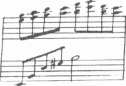
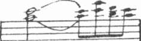
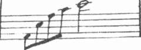
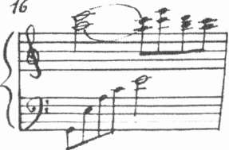
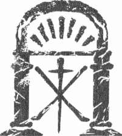
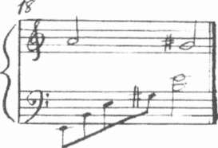
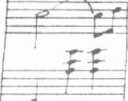
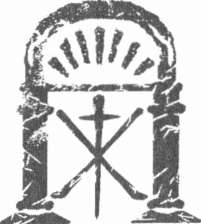
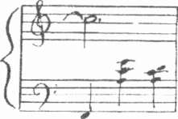
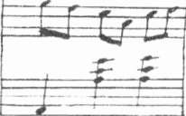

Tapınak
Başka bir şey söylemeden kapıyı açtı ve dışarı çıktı.
Kapı takırdayarak kapandı, kütüphane sessizliğe gömüldü.
Anatole'ün açıkça görülen üzüntüsü ve biraz önce yaşadıkları karşı-
sında şaşkına dönen Leonie elindeki zarfa baktı. Kendi ismi siyah mürek-keple, ağabeyinin zarif elyazısıyla yazılmıştı.
İçinden ne çıkacağından korkarak bir süre inceledi ve yırtıp açtı.
Perşembe, 30 Ekim
Benim tatlı, küçük Leonie'm
Sen hep beni, sana çocukmıtşsun gibi davranmakla suçla-dm. Hatta henüz saçlarına kurdele takılırken, kısacık etekler giyerken ve ben okul ödevlerimle uğraşırken bile bunu söylerdin.
Bu kez suçlamakta haklısın. Yarın akşamüstü kayın ormamndaki açıklıkta ailemizi mahvetmek için her türlü girişimi yapan bir adamla karşılaşacağım.
Eğer işler benim lehime sonuçlanmazsa, senin bana sormak isteyeceğin birçok soruyu yanıtsız bırakmak istemiyorum. Düellonun sonucu ne olursa olsun, gerçeği bilmeni istiyorum.
Isolde'ü tüm ruhum ve yüreğimle seviyorum. Mart ayında onun cenazesi diye düzenlenen törene katılmıştın. Çok kısa, talihsiz bir ilişki yaşadığı bir erkeğin elinden hepimizi kurtarmak, emniyette olmak için böylesine umarsız bir girişimde bulunmuş-
tuk. Isolde'ün sahte ölümünü ve cenazesini düzenlemek, altında yaşadığı gölgeden kurtulmasının tek yoluydu.
Leonie uzanıp iskemlenin arkalığını tuttu ve dikkatle oturdu.
Bu aldatmacayı senin çözümleyeceğini umduğumu itiraf ediyorum, ilkbaharın ve yazın zorlu günlerinde bana gazeteler aracılığıyla saldırılar sürerken, senin maskeyi düşürüp beni suç-
layacağını düşündüm, ama anlaşılan ben de rolümü iyi oynamışım. Yüreği ve amacı tertemiz olan sen, benim dudaklarımın ve bitkin gözlerimin etrafındaki çizgilerin kederden çok çapkınlıktan oluştuğundan şüphelenir miydin?
487
Kate Mosse
Isolde'iin seni aldatmayı hiç istemediğini açıklamak zorundayım. Domaine de la Cade'a gelip onunla tanıştığın anda, senin beni gerçekten sevdiğine inandı, zaman içinde kendisine de benzer bir kız kardeş sevgisini göstereceğini umut etti ve ahlaki kaygıları bir yana bırakıp kurduğumuz tezgâhta bizi destekleyeceğini söyledi. Ben onunla aynı fikirde değildim.
Aptallık etmişim.
Belki de bu dünyadaki son günümde bu satırları yazarken, en büyük hatamın ahlak açısından korkmak olduğunu itiraf ediyorum. Birçok hatanın arasından yalnızca bir tanesi.
Ama Domaine de la Cade'ın huzurlu bahçelerinde seninle ve Isolde ile güzel haftalar geçirdim.
Dahası da var. Son bir aldatmaca. Eğer bağışlayamayacak-san bile, en azından anlayacağını umuyorum. Carcassonne'da sen sokakları dolaşırken Isolde ile ben evlendik. Onun adı artık Madam Vernier ve hem sevgi, hem de yasal bağlarla senin karde-
şin sayılır.
Üstelik yakında baba olacağım.
Ama hayatımızın en mutlu gününde o adamın bizi bulduğu-nu öğrendik. Carcassonne'dan apar topar ayrılmamızın gerçek nedeni de budur. Isolde'iin hastalanmasının nedeni de budur.
Zayıflayan sinirlerinin daha fazla dayanamayacağı belliydi. Bu konu sonsuza dek çözümlenmeden kalamaz.
Cenaze töreninin sahte olduğunu öğrenen adam bizi önce Carcassonne ardından Rennes-les-Bains'e kadar takip etmiş. Bu nedenle düello davetini kabul ettim. Konuyu sonsuza dek kapatmanın tek yolu buydu.
Yarın akşamüstü onunla karşılaşacağım. Daha önce de ol-duğu gibi yine senin yardımına ihtiyacım var küçüğüm. Düelloyu Isolde'iin önceden bilmemesi için bana yardımcı olmalısın. Eğer sağ olarak dönemezsem, karımın ve çocuğumun güvenliğinden senin sorumlu olmanı istiyorum. Evin mülkiyeti tümüyle bize ait.
Seni seven ağabeyin
A...
488
Tapınak
Leonie'nin elleri kucağına düştü. Tutmaya çalıştığı gözyaşları sessizce yanaklarından aşağıya süzülmeye başladı. Aldatmacalar için, iki kardeşi birbirinden uzaklaştıran yanlış anlamaların acısı için ağlıyordu. Isolde için, Anatole ile birlikte onu aldattıkları için ve kendisi onları asla aldatmadığı için ağlıyordu. Duygularından arınıncaya kadar ağladı.
Ardından düşünceleri keskinleşti. Anatole'ün bu sabah erkenden evden çıkmasının nedenini şimdi daha iyi anlıyordu.
Birkaç gün, daha doğrusu saat içinde ölmüş olabilir.
Pencereye koşup sonuna kadar açtı. Sabahın berrak havasından sonra bulutlar çıkmıştı. Güneşin zayıf ışıklarında her şey durgun ve nemliydi.
Bir sonbahar sisi bahçelerde dolaşıyor, dünyayı aldatıcı bir dinginlik kaplıyordu.
Yarın akşam günbatımında.
Kütüphanedeki aynaya bakınca her zamanki gibi göründüğü halde kendini bu kadar farklı hissedebilmesinin çok garip, olduğunu düşündü.
Gözleri, yüzü, çenesi, ağzı üç dakika önce neredeyse yine oradaydı.
Leonie titredi. Ertesi gün Azizler Yortusııydu. İyilik ve kötülüğün arasındaki tülün en fazla inceldiği korkunç bir güzellik gecesi. Böyle olaylar işte böyle zamanlarda yaşanırdı. İblislerin ve kötülüklerin zamanıydı.
Düelloya engel olmalıydı. Bunu ancak Leonie engelleyebilirdi. Böylesine korkunç bir oyunun devam etmesine izin verilmemeliydi. Bu düşünceler hızla beyninde akarken bile, yararsız olduğunun farkındaydı. Anatole'ü seçtiği yoldan caydırmayı başaramazdı.
"Hedefi ıskalamamalı," diye mırıldandı. Onunla yüzleşmeye hazır olarak kapıyı açtı.
Ağabeyi yoğun bir sigara dumanı bulutu arasında durmuş, mektubu okurken geçen dakikaların endişesi yüzüne vurmuştu.
"Oh, Anatole," diyerek ona sarıldı.
Anatole'ün gözleri doldu. "Bağışla beni," diye fısıldadı. "Çok ama çok üzgünüm. Beni bağışlayabilir misin, küçüğüm?"
489
72
O O
Günün geri kalanını Leonie ile Anatole birlikte geçirdiler. Öğleden sonra Isolde odasında dinlenmeye çekilerek onlara konuşma fırsatı yaratmıştı. Anatole beklentinin yükü ve koşulların kendisine karşı aldığı cepheyle öylesine ezilmişti ki, Leonie kendini büyük kardeş gibi hissediyordu.
Bunca zamandır aldatıldığı için kapıldığı öfkeyle, ağabeyinin Isolde'e duyduğu aşkı korumak için gösterdiği çabaya duyduğu şefkat arasında bölünmüş gibiydi.
"Bu kandırmacayı annem biliyor muydu?" sorusunu defalarca sorarken Montmarte Mezarlığı'nda içi boş bir tabutun başında durmuş olması aklından çıkmıyordu. "Yoksa bu oyuna katılmayan tek kişi ben miydim?"
"Ona anlatmadım," dedi Anatole. "Ama olayın göründüğünden farklı olduğunu anladığını sanıyorum."
"Ölen olmadı," dedi alçak sesle. "Ya klinik? Bir bebek var mıydı?"
"Hayır. Aldatmacayı destekleyen başka bir yalandı."
Anatole'ün yanından ayrıldığı kısacık sürelerde ertesi günün neler getirebileceği korkusunu yaşıyordu Leonie. Ağabeyi düşmanı hakkında pek fazla konuşmuyor, yalnızca birlikte oldukları süre içinde Isolde'e büyük zarar verdiğini söylüyordu. Adamın Parisli olduğunu ve onun için hazırladığı şaşırtmacaya karşın izlerini bulup kendilerini Midi bölgesine kadar takip ettiğini söylemekle yetiniyordu. Carcassonne'dan Rennes-les-Bains'e gelişi karşısında ise şaşkınlığa düştüğünü gizlemiyordu. Yine de adamın ismini açıklamıyordu.
490
Tapınak
Adamın tutkusunun ve intikam arzusunun öyküsünü, ağabeyini gazete sütunlarındaki karalama girişimlerini, Panorama Pasajı geçidindeki saldırının öyküsünü, Isolde ve Anatole'ü yok etmek için bunca çabayı dinlerken ağabeyinin sözlerinin ardındaki korkuyu algılayabiliyordu.
Anatole hedefi ıskaladığı takdirde sonucun ne olacağını hiç konuş-
madılar. Düellodan sağ kurtulup onları koruyamadığı takdirde gece karanlığında Isolde ile birlikte Domaine de la Cade'dan kaçmanın bir yolunu bulacağına ağabeyinin ısrarı üzerine söz verdi.
"O zaman, onurlu bir adam değil, öyle mi?" diye sordu. "Yani sence düello kurallarına uyar mı?"
"Uymayacağından korkuyorum," dedi Anatole ciddi bir sesle. "Eğer yarın işler kötü giderse, onu aramaya geldiğinde Isolde'ün burada olmamasını isterim."
"Şeytana benziyor."
"Olayların başka türlü sonuçlanacağını düşündüğüm için ben de aptala benziyorum."
Gece olup Isolde uyumak için tekrar odasına çekilince, Anatole ile Leonie salonda buluşup ertesi gün yapacaklarını planlamaya karar verdiler.
Kendisi de bir aldatmacayı yaşamış olduğundan Leonie böyle bir oyunun parçası olmak istemiyordu, ama sağlık durumu nedeniyle Isolde'ün olanları şimdiden bilmemesinin daha iyi olacağını da kabul ediyordu.
Anatole kararlaştırılan saatte kendisi Pascal ile birlikte evden çıkarken karısını oyalamasını istemişti kardeşinden. Yardımcısı olması için Charles Denarnaud'ya gönderdiği davet hemen kabul edilmişti. İsteksiz bir katı-
lımcı olan Doktor Gabignaud da gerekirse tıbbi yardımda bulunmak için hazır bulunacaktı.
Bütün olanlara boyun eğdiği halde Leonie'nin ağabeyinin isteklerine uymaya hiç niyeti yoktu. Anatole'ün böyle bir çatışmaya girdiğini bilerek hiçbir şey yapmadan salonda oturup beklemek istemiyordu. Güneş battıktan sonra gece yarısına kadar Isolde'le ilgilenecek birini bulmalıydı.
491

Kate Mosse
Yine de niyetlendiği itaatsizliğin hiçbir belirtisini göstermiyordu.
Ayrıca Anatole kendi hararetli planlarına öylesine dalmıştı ki, kardeşinin kabullenişinden şüphe duymayı aklına bile getirmiyordu.
Ağabeyi yatak odasına giden yolu aydınlatmak için bir mumla dışarı çıkınca, Leonie biraz daha kalıp, düşünmeye başladı.
Güçlü olacaktı. Korkularının kendisini esir almasına izin vermeyecekti. Her şey yolunda gidecekti. Anatole düşmanını yaralayacak ya da öldürecekti. Başka bir seçeneği aklına bile getirmiyordu.
Saatler ilerlerken, sadece iyi dileklerin işleri yoluna koymayacağını fark etti.
492
80
o o
31 E K İ M CUMARTESİ
Azizler Yortusu pembe ve soğuk bir şafakla başladı. Leonie üzerinde hissettiği baskı yüzünden pek iyi uyuyamamıştı. Kahvaltıdan sonra Anatole sabah saatlerini Isolde ile birlikte geçirdi.
Kütüphanede oturan Leonie, onların güldüğünü, fısıldaştığını, planlar yaptığını duyuyordu. Anatole ve Isolde'ün mutluluğunu düşünürken, bunun ne kadar kolayca elinden alınabileceğini bilmek daha da fazla acı veriyordu.
Kahve içmek için yanlarına gidince Anatole başını kaldırıp kardeşine baktı, bir an için bakışları duygu yüklüydü. Gözlerindeki üzüntü, korku, ıstırabı görünce, kendi yüz ifadesiyle ağabeyini elevereceğinden çekinerek başını çevirdi.
Öğle yemeğinden sonra kâğıt oynayıp yüksek sesle kitap okuyarak, önceden planladıkları gibi Isolde'ün dinlenme saatini ertelediler. Ancak saat dörtte Isolde odasına çekilip akşam yemeğine kadar yatacağını açıkladı. Onunla birlikte salondan çıkan Anatole on beş dakika sonra üzgün bir ifadeyle geri döndü.
"Uyuyor."
Bulutların ardından son parıltılarını saçan güneşin kayısı rengine boyadığı gökyüzüne baktılar. Leonie sonunda direncini yitirdi. "Henüz geç değil," diye bağırdı. "Düelloyu iptal etmek için daha zaman var." Ağabeyinin eline sarıldı. "Sana yalvarıyorum Anatole, oraya gitme."
493
Kate Mosse
Anatole kız kardeşine sımsıkı sarılıp kendine doğru çekince o çok tanıdık sandal ağacı saç losyonu kokusu Leonie'nin burnuna geldi.
"Artık onunla karşılaşmayı reddedemeyeceğimi biliyorsun küçüğüm,"
dedi alçak sesle. "Başka türlü sona ermeyecek. Ayrıca oğlumun büyüyünce babasının bir korkak olduğunu düşünmesini istemiyorum." Kardeşine biraz daha sıkı sarıldı. "Ne de, cesur ve metin kız kardeşimin böyle düşünmesini isterim."
"Ya da kızının," dedi Leonie.
Anatole, gülümsedi. "Ya da kızımın."
Koridordaki ayak seslerine kulak kabarttılar.
Pascal elinde Anatole'ün paltosuyla merdivenin yanında duruyordu. Yüz ifadesinden bu olayın bir parçası olmak istemediği açıkça anlaşılıyordu.
"Zaman geldi senyör," dedi Pascal.
Leonie, ağabeyine bir daha sarıldı. "Lütfen Anatole. Lütfen gitme.
Pascal gitmesine izin verme."
Anatole usulca Leonie'nin parmaklarını ceketinin kolundan çekerken Pascal sempatiyle onlara bakıyordu.
"Isolde'e göz kulak ol," diye fısıldadı. "Benim Isolde'üme. Odamda bir mektup bıraktım. İşler yolunda gitmezse..." Cümlesini tamamlamadı.
"Hiçbir şeye muhtaç olmasın. Ne o, ne de bebeği. Onların güvende olmasını sağla."
Pascal paltosunu giymesine yardım etti ve iki erkek hızlı adımlarla ön kapıya doğru yürürken Leonie umarsızlıkla arkalarından baktı. Anatole dönüp parmaklarını dudaklarına götürdü.
"Seni seviyorum, küçüğüm."
Akşamüstünün nemli havası bir anda içeri doldu ve kapı arkalarından kapandı. Leonie çizmelerinin çakıltaşları üzerindeki sesi duyulmaz olana dek dinledi.
Sonra gerçekler yüzüne tokat gibi indi. En alt basamağa oturup, başını kollarına dayadı ve hıçkırmaya başladı. Merdivenin altındaki gölgeden Marieta ortaya çıktı. Bir an durakladı ve Leonie'nin yanına oturup kolunu omzuna attı.
"Her şey yoluna girecek matmazel," diye mırıldandı. "Pascal, beye-fendiye bir zarar gelmesine izin vermez."
494
Tapınak
Tuzağa düşmüş yabanıl bir hayvan çığlığını andıran hüzün, korku ve umarsızlık yakarışı Leonie'nin dudaklarından yükseldi. Isolde'ü uyandırmayacağına söz verdiğini anımsayıp gözyaşlarını bastırdı.
Ağlama nöbeti uzun sürmedi. Başı dönüyor, garip bir biçimde duygularından arındığını hissediyordu. Boğazına bir şey takılmış gibiydi.
Bluzunun manşetiyle gözlerini kuruladı.
"Benim..." Isolde'e nasıl hitap edeceğini bilemediğinden bir an durakladı. "Benim yengem hâlâ uyuyor mu?"
Marieta ayağa kalkıp önlüğünü düzeltti. Yüz ifadesi Pascal'ın her şeyi ona açıkladığını gösteriyordu.
"Madamın uyanıp uyanmadığına gidip bakmamı ister misiniz?"
Leonie başını salladı. "Hayır, rahatsız etmeyelim."
"Size bir şey getirebilir miyim? Örneğin biraz ıhlamur?"
Leonie de ayağa kalktı. "Hayır, artık iyiyim." Gülümsemeye çalıştı.
"Eminim yapacak çok işin vardır. Ayrıca ağabeyim geri döndüğünde acık-mış olacaktır. Beklemesini istemem."
Bir an göz göze geldiler.
"Pekâlâ matmazel," dedi Marieta sonunda. "Mutfağın hazır olmasını sağlarım."
Leonie bir süre daha holde kalıp evi dinledi. Yapacaklarına kimsenin tanık olmayacağını fark edince memnun oldu. Her tarafın sessiz olduğuna inanıp merdiveni tırmandı ve odasına doğru koştu.
Anatole'ün odasından gelen sesleri duyunca aklı karıştı. Yarım saat önce onu, Pascal ile birlikte evden çıkarken gördüğü için şu anda duyduklarına inanamıyordu.
Odasına gitmeye karar verdiği anda kapı açıldı ve Isolde neredeyse kollarına düştü. Sarı saçları dağılmış, giysisinin ense düğmesi açılmıştı.
Uykusundan bir şeytan ya da hayalet görerek uyanmış gibi tuhaf bir hali vardı. Leonie boğazmdaki kırmızı yara izini fark edince başını çevirdi.
Her zamanki zarif, kontrollü, kendine hâkim yengesini bir histeri krizinin eşiğinde görünce, sesi istediğinden daha sert çıktı.
"Isolde! Ne oldu? Neyin var?"
Şiddetli bir kriz geçiriyormuş gibi Isolde başını yandan yana atıyor, elindeki kâğıdı sallıyordu.
495
Kate M o s s e
"Gitti! Dövüşmeye gitti!" diye bağırdı. "Bunu engellemeliyiz."
Anatole'ün yatak odasında bıraktığı mektubu zamanından önce bulduğunu anlayan Leonie bir anda buz kesti.
"Uyuyamayınca onu görmek istedim. Anatole yerine bunu buldum."
Isolde susup Leonie'nin gözlerinin içine baktı. "Sen biliyordun," dedi al-
çak ve sakin bir sesle.
Leonie bir an, Anatole'ün ormanda bir düello yapmak için yürümekte olduğunu unuttu. Gülümsemeye çalışarak uzanıp Isolde'ün elini tuttu.
"Attığınız adımları biliyorum. Evlendiğinizi..." dedi alçak sesle. "Keş-
ke orada olsaydım."
"Leonie, çok isterdim..." Isolde bir an durakladı. "Sana anlatmak istedik."
Leonie, ona sarıldı. Bir anda roller değişmişti.
"Anatole'ün baba olacağını da biliyor musun?" diye fısıldadı Isolde.
"Biliyorum. Aldığım en güzel haber."
Isolde birden geri çekildi. "Ama bu düelloyu da biliyordun?"
Leonie durakladı. Soruya kaçamak bir yanıt vermek üzereyken vazgeçti. Aralarında gereğinden fazla yalan vardı.
"Biliyordum," diye itiraf etti. "Mektubu dün biri getirmiş. Yanında Denarnaud ile Gabignaud var."
Isolde bembeyaz kesildi. "Elden geldi diyorsun?" diye fısıldadı. "Yani o, yakındaydı. Hatta buradaydı?"
"Anatole hedefi ıskalamayacaktır," dedi Leonie, kendi söylediğine inanmıyordu.
Isolde başını dikleştirip omuzlarını geriye attı. "Ona gitmeliyim."
Ruhsal durumunun ani değişikliği karşısında şaşıran Leonie ne diyeceğini bilemedi.
"Gidemezsin!" diye karşı çıktı.
Isolde aldırış bile etmedi. "Düello nerede yapılacak?"
"Isolde, sen iyi değilsin. Onu takip etmeye kalkışman aptallık olur."
"Nerede?"
Leonie içini çekti. "Kayın ormanında bir açıklıkta. Tam yerini bilmiyorum."
496
Tapınak
"Yabanıl ardıçların yetiştiği yer. Müteveffa kocam da ara sıra oraya atış talimi yapmaya giderdi."
"Olabilir. Anatole daha fazlasını söylemedi."
"Giyinmeliyim," diyerek kendini Leonie'nin ellerinden kurtardı.
Genç kızın, onu izlemekten başka çaresi kalmamıştı. "Hemen çıksak ve tam yerini bulsak bile, unutma ki Anatole, Pascal ile birlikte yarım saat önce gitti."
"Eğer hemen gidersek, engel olabiliriz."
Korsesini giymekle zaman yitirmeden, Isolde gri yürüyüş elbisesini ve ceketini giyip zarif ayaklarını çizmelerine soktu. Düğmelerini gelişigü-
zel ilikleyip kapıya koştu. Leonie bir adım gerisinden geliyordu.
"Rakibi sonuca boyun eğecek midir?" diye sordu Leonie, Anatole'ün biraz önce söylediğinden farklı bir yanıt duymak umuduyla.
Isolde durup gri gözlerinde umarsız bir bakışla ona döndü.
"O... o onurlu bir adam değildir."
Hem güvence aramak, hem de onu rahatlatmak için Leonie elini tuttu ve o anda aklına başka bir soru takıldı. "Bebek ne zaman dünyaya gelecek?"
Bir an için Isolde'ün bakışları yumuşadı. "Her şey yolunda giderse haziranda. Yaz bebeği olacak."
Koridordan geçerken Leonie, dünyanın renkleri adeta sertleşti, diye düşündü. Bir zamanlar sevilen, değer verilen cilalı masa, kapılar, piyano ve içine Leonie'nin tapınakta bulduğu notayı yerleştirdiği goblen tabure sanki onlara sırtını dönmüştü. Soğuk, cansız nesneler...
Giriş kapısının arkasına asılı kalın pelerinlerinden birini Isolde'e uzattı, diğerine de kendi sarındı ve kapıyı açtı. Günbatımı serinliği bir kedi gibi bacaklarına sarıldı. Yanan lambayı raftan aldı.
"Ne zaman karşılaşacaklar?" diye sordu Isolde alçak sesle.
"Günbatımında. Saat altıda."
Gökyüzünün maviliği gitgide koyulaşıyordu.
"Eğer zamanında orada olacaksak, acele etmeliyiz," dedi Leonie.
"Hadi çabuk ol."
497
F : 3 2
81
o o
"Seni seviyorum küçüğüm," diye tekrarladı Anatole kapı arkalarından gıcırdayarak kapanırken.
Ellerinde birer lambayla, Denarnaud'nun arabasının beklediği yolun sonuna doğru yürüdüler.
Bu işin bir parçası olmak istemediği her halinden belli olan Gabignaud'yu Anatole başıyla selamladı. Charles Denarnaud, Anatole ile tokalaştı.
"Sen, doktorla arkada, senin adamınla ben önde gideceğiz," dedi Denarnaud serin akşam havasında sesini yükselterek.
Tente açıktı. Gabignaud ile Anatole arabaya bindiler. Bu kişilerle aynı arabanın içinde olmaktan huzursuz olan Pascal ile Denarnaud, karşılarına oturup uzun silah kutusunu dizlerine yerleştirdiler.
"Kararlaştırılan yeri biliyor musun Denarnaud?" diye sordu Anatole.
"Arazinin doğusunda, kayın ormanında."
Denarnaud eğilip arabacıya yolu tarif etti. Arabacının dizginleri oynatmasını, koşum takımlarının durgun akşam havasında takırdayarak hareket etmesini dinledi Anatole.
Konuşmaya istekli olan bir tek Denarnaud idi. Öykülerinin çoğu, ka-tıldığı ve genelinde yardımcısı olduğu kişi için sonu iyi biten düellolardan söz ediyordu. Adamın kendisini rahatlatmaya çalıştığını anladı Anatole ama susmasını yeğlerdi doğrusu.
498
Tapınak
Dimdik oturup manzaraya bakarken belki de dünyayı son görüşü olacağını düşünüyordu. Yolu çevreleyen ağaçlar kırağıyla kaplanmıştı. Atların sert toprak üzerindeki nal sesleri parkta yankılanıyordu. Soluk bir mehtap tüm görkemiyle yükselirken kararan gökyüzü ayna gibi parlıyordu.
"Bunlar benim silahlarım," diye açıkladı Denarnaud. "Kendim doldurdum. Kutu mühürlü. Bunların mı yoksa rakibinin silahlarının mı kullanılacağı konusunda kura çekeceksiniz."
"Biliyorum," diye atıldı Anatole ve terslendiği için özür diledi. "Özür dilerim Denarnaud. Sinirlerim gerildi. Yakından ilgilendiğin için teşekkür ederim."
"Kuralları bir kez daha gözden geçirmek daima yararlıdır," dedi Denarnaud. Daracık arabanın içinde sesi gereğinden daha yüksek çıkıyordu. Anatole tüm kabadayılığına karşın onun da gergin olduğunu hissetti.
"Yanlış anlaşılma olmasını istemeyiz. Bildiğim kadarıyla bu işler Paris'te daha farklı yürüyor."
"Sanmıyorum."
"Atış talimi yapıyor muydun Vernier?"
Anatole başıyla onayladı. "Evde bulunan silahlarla."
"Onlarla rahat ateş ediyor musunuz? Nişan alması iyi mi?"
"Keşke daha fazla zamanım olsaydı."
Araba engebeli arazide ilerlemeye başladı.
Anatole, sevgili Isolde'ünün yastığa dağılmış saçları ve narin, beyaz kollarıyla uyuyuşunu gözlerinin önünde canlandırmaya çalıştı. Leonie'nin parlak, yeşil, sorgulayıcı gözlerini düşündü. Henüz doğmamış çocuğunun yüzünü hayal etti. Sevdiği kişilerin yüzlerini belleğine kazımaya çalıştı.
Bunu, onlar için yapıyorum.
Ama dünya takırdayan arabaya, Denarnaud'nun kucağındaki ahşap kutuya, yanında oturan Gabignaud'nun sinirli soluklarına kadar küçül-müştü.
Anatole faytonun sola döndüğünü hissetti. Tekerleklerin altında toprak daha da engebeli bir hal almıştı. Denarnaud arabanın yan tarafına vurup arabacıya sağ taraftaki dar yola girmesini söyledi.
499
Kate Mosse
İki tekerlekli araba bakımsız ağaçların arasındaki patikaya saptı ve bir açıklığa geldi. Diğer tarafta bir araba daha duruyordu. Ne göreceğini daha önceden bilmesine karşın Tourmaline Kontu Victor Constant'ın siyah üzerine altın sarısı armasını tanıyınca Anatole irkildi. Tüyler ve gözlükler takılmış iki doru at ayaklarını sert soğuk toprağa vurarak bekliyordu. Arabanın yanında bir grup erkek vardı.
Önce Denarnaud indi. Ardından Gabignaud, elinde silah kutusuyla Pascal indi ve Anatole onları izledi. Öteki arabanın yanındakilerin hepsi siyah giysili olduğu halde uzak mesafeden bile Constant'ı tanıdı. Ani bir tiksintiyle titrerken operadaki isyan gecesinde Panorama Pasajı'nda kendisine saldıran kırmızı çiçekbozuğu suratlı adamı da tanıdı. Yanında duran daha kısa boylu, yoksul, ahlaksız görünümlü eski bir Napolyon pelerinine bürünmüş ihtiyar askerin yüzü de yabancı değildi.
Anatole derin bir soluk aldı. Isolde ile tanışıp âşık olduğu dakikadan itibaren Victor Constant'ın varlığı aklından hiç çıkmamıştı, ama iki erkek ocak ayındaki ilk ve tek kavgadan bu yana karşılaşmamışlardı.
Vücudunu saran öfke dalgasına şaşırdı. Yumruklarını sıktı. Şu anda gerekli olan düşüncesiz bir intikam arzusu değil, serinkanlılıktı. Birdenbire orman çok küçük göründü gözüne. Kayın ağaçlarının çıplak gövdeleri üzerine gelir gibiydi.
Toprağın üzerine çıkmış bir ağaç köküne takılıp sendeledi, neredeyse düşüyordu.
"Sakin ol Vernier," diye mırıldandı Gabignaud.
Anatole aklını başına topladı ve Denarnaud'nun, Constant'ın yanına doğru gidişini izledi. Pascal kollarında sanki bir çocuk tabutuymuş gibi taşıdığı ahşap kutuyla peşinden yürüyordu.
Yardımcılar birbirini resmi biçimde selamladı ve açıklığın ortasına doğru yürüdüler. Anatole, Constant'ın ok gibi delen, soğuk bakışlı gözlerinin üzerinde olduğunu hissediyordu. Bu arada adamın pek iyi görünmediğini de fark etti.
Yardımcılar Pascal'ın bir gün önce hazırladığı derme çatma atış talim yerine yaklaştılar ve iki erkeğin duracağı yerleri adımlayarak ölçtüler. Pascal ile Constant'ın adamı yerleri belirtmek için ıslak toprağa birer baston çaktılar.
500
Tapınak
"Nasılsınız?" diye mırıldandı Gabignaud. "Size herhangi bir şey ge-tirmemi..."
"Hiçbir şey," diye kestirdi Anatole. "Hiçbir şeye ihtiyacım yok."
Denarnaud yanına geldi. "Silah seçimi kurasını kaybettiğimizi üzülerek bildiriyorum." Anatole'ün omzuna vurdu. "Eminim fark etmeyecektir.
Önemli olan namlu değil, nişandır."
Anatole kendini uykusunda yürür gibi hissediyordu. Çevresindeki her şey boğuklaşmıştı, sanki başka birinin başına geliyordu. Rakibinin silahını kullanacağı için kaygılanması gerektiğini biliyordu, ama duygulan donmuş gibiydi.
İki grup birbirine yaklaştı.
Denarnaud, Anatole'ün paltosunu çıkarttı. Constant'ın adamı da aynı-
sını yaptı. Denarnaud'nun gösterişli bir hareketle üzerinde başka bir silah, ya da kalkan görevini görecek bir cüzdan ya da kâğıt olup olmadığını anlamak için Constant'ın ceket ve yelek ceplerini kontrol etmesini izledi.
Denarnaud başını salladı. "Her şey yolunda."
Constant'ın adamı ellerini ceplerinde gezdirirken Anatole de kollarını havaya kaldırdı. Saatinin cebinden alınıp zincirinin açıldığını fark etti.
"Yeni bir saat mi beyefendi? Üstelik isminiz yazılı. Harika bir işçilik."
Hırıltılı sesi tanımıştı. Paris'teki saldırıda babasının saatini cebinden çalan adamdı. Anatole, adama vurmamak için yumruklarını sıktı.
"Bırak onu," diye homurdandı sertçe.
Adam efendisine baktı ve omzunu silkerek uzaklaştı.
Denarnaud dirseğinden tutup, yere çakılı bastonlardan birinin yanına götürdü. "Vernier burası sizin yeriniz."
Iskalamamak zorundayım.
Eline bir silah tutuşturuldu. Soğuk ve ağır silah, müteveffa amcasının tabancalarından daha kaliteliydi. Uzun namlusu özenli cilalanmış ve kabzasına Constant'ın isminin başharfleri kazınmıştı.
Anatole çok yükseklerden kendine bakıyormuş duygusuna kapıldı.
Simsiyah saçlı, bıyıklı, yüzü solmuş, burnu soğuktan kızarmış kendisine çok benzeyen bir adama bakıyordu sanki.
501
Kate M o s s e
Karşısında ise onları Paris'ten Midi bölgesine kadar takip etmiş olan adama çok benzeyen biri duruyordu.
Uzaklardan bir ses duyuldu. Birdenbire, anlamsızca, hızla bu iş biti-rilecekti.
"Hazır mısınız beyler?"
Anatole başını salladı. Constant başını salladı.
"Birer atış."
Anatole kolunu kaldırdı. Constant da kolunu kaldırdı.
Aynı ses tekrar duyuldu. "Ateş."
Tüm duygularından arınmış olan Anatole ne bir şey duyuyor, ne görüyor, ne de koku alıyordu. Hiçbir şey yapmadığını düşünüyordu, ama kolundaki kaslar kasıldı, parmağı tetiği çekti ve horozun düşme tıkırtısı duyuldu. Barutun ateşlendiğini ve bir duman bulutunun yükseldiğini gördü.
İki kurşun sesi ormanda yankılandı. Ağaçlardan panik içinde havalanan kuşlar bir an önce uzaklaşmak için hızla kanat çırptılar.
Anatole'ün ciğerlerindeki hava boşaldı. Bacakları büküldü. Dizlerinin üstüne düşerken Isolde ile Leonie'yi düşünüyordu. Sıcak bir banyonun rahatlatıcı etkisi gibi bir sıcaklık soğuk bedenine yayılıyordu.
"Vuruldu mu?" Gabignaud'nun sesi olup olmadığından emin değildi.
Çevresinde toplanan koyu renkli figürlerin Denarnaud ya da Gabignaud olup olmadıkları belli değildi. Yalnızca siyah ve gri çizgili pantolonlar, ağır çizmeler, kalın kürk eldivenlere bürünmüş elleri seçebiliyordu. Sonra kulağına bir ses çalındı. Soğuk havada adını haykıran biri vardı.
Anatole yere yuvarlandı. Isolde'ün kendisine seslendiğini hayal ediyordu. Aynı anda ötekilerin de bu sesi duyduğunu fark etti. Çevresine top-lananlar geri çekilince, ağaçların arasından kendisine doğru koşan Leonie ile Isolde'ü gördü.
"Hayır. Anatole, hayır!" diye haykırıyordu Isolde. "Hayır!"
Aynı anda görüş alanının hemen dışında başka bir şey dikkatini çekti.
Gözleri kararıyordu. Oturmaya çabaladı ama yan tarafına bıçak saplanmış
gibi ani bir sancıyla soluğu kesildi. Elini Isolde'e uzattı ama gücü kalmamıştı. Yere yığıldığını hissetti.
Her şey ağır çekimdeymiş gibiydi. Neler olacağını algıladı. Önce gözleri bunu kabullenemedi. Denarnaud düello kurallarının yerine getirilip 502


Tapmak
getirilmediğini kontrol etmişti. Yalnızca bir tek atış. Ama Constant düelloda kullandığı silahı yere atmış, ceket cebinden namlusu iki parmağının arasına sığacak kadar küçük bir tabanca çıkarıyordu. Kolu yukarı doğru kalktı, sağa döndü ve tetiği çekti.
Yalnızca bir tane olması gerekirken başka bir tabancası daha vardı.
Anatole haykırdı, ama çok geç kalmıştı.
Isolde'ün bedeni bir an adeta havada asılı kaldı ve merminin şiddetiyle arkaya doğru sarsıldı. Gözleri önce şaşkınlık ardından şok ve acıyla açıldı.
Anatole onun yere düştüğünü gördü.
Anatole göğsünden bir haykırışın yükseldiğini hissetti. Çevresinde herkes bağırıyor, haykırıyordu. Gerçek olamaz gibi geliyordu ama tam bu kargaşanın ortasında sanki biri kahkahalarla gülüyordu. Görüşü zayıfladı, beyazın yerini siyah aldı, dünyanın renkleri soldu.
Karanlık üzerine çökmeden önce duyduğu son ses buydu.
503
72
O O
Bir çığlık havayı böldü. Leonie de duydu, ama önce bu sesin kendi dudaklarından çıktığını algılayamadı.
Gözleriyle gördüklerine inanmayarak olduğu yerde kalakaldı. Bir sahneye bakıyormuş gibiydi. Orman ve içindeki kişiler fırça, boya ya da kameranın objektifiyle ölümsüzleştirilmiş gibiydi. Gerçek; kanlı canlı benliklerinin cansız, hareketsiz resimleriydi.
Bir anda bütün olan biteni algılamaya başladı. Bakışlarını karanlığa dikince gerçeğin kanlı el izleri aklına kazındı.
Isolde ıslak toprağın üzerinde gri giysisi kırmızıya boyanmış yatı-
yordu.
Bir kolu üzerinde doğrulmaya çabalayan, yüzü acıyla buruşmuş Anatole, tekrar yere yuvarlanıyor. Gabignaud tam yanında çömelmiş.
En şaşırtıcı olanı ise katilin yüzüydü. Isolde'ün böylesine korktuğu, Anatole'ün nefret ettiği adamın yüzü karşısındaydı.
Tüm cesaretini yitirince vücudunu bir soğukluk kapladı.
"Hayır," diye fısıldadı.
Cam kadar keskin suçluluk duygusu tüm savunmasını yıktı. Utanç, ardından öfke yatağını yıkan bir nehir gibi bedenini sardı. Birkaç adım ötede Carcassonne gezisinden bu yana düşlerini süsleyen adam duruyordu.
Victor Constant.
Anatole'ün katili. Isolde'iin işkencecisi.
Onu buraya getiren Leonie miydi?
504
Tapınak
Aynı kişi olduğundan hiç kuşku duymamasına karşın, arabanın kapı-
sındaki armayı görmek için elindeki lambayı havaya kaldırdı.
Ani, şiddetli, tüm benliğini saran bir öfke dalgasına kapıldı. Kendi güvenliğini bir yana bırakıp ağaçların gölgesinden çıkıp Anatole ile Gabignaud'nun çevresinde duranlara doğru koştu.
Doktor donup kalmış gibiydi. Yaşananların getirdiği şok, hareket etme yeteneğini yitirmesine yol açmıştı. Sallanıp silkelendi ve neredeyse tökezleyip düşüyordu. Çılgın gözlerle Victor Constant ile adamlarına ve silahları kontrol edip düello koşullarının yerine getirildiğini bildiren Charles Denarnaud'ya baktı.
Leonie, önce Isolde'ün yanına ulaştı. Kendini yere atıp genç kadının pelerinini kaldırdı. Açık gri giysisinin sol tarafı bir serada zamansız açmış
bir çiçek gibi kırmızıya dönüşmüştü. Leonie eldivenini çıkardı. Isolde'ün giysisinin kolunu yukarı sıyırıp nabzını aradı. Çok hafifti, ama hiç olmazsa atıyordu. Az da olsa bir yaşam belirtisi vardı. Ellerini bitkin bedeninde gezdirince merminin koluna isabet ettiğini anladı. Eğer pek fazla kan kaybetmezse, sağ kalabilirdi.
"Doktor Gabignaud, yaşıyor," diye bağırdı. "Yardım edin. Çabuk.
Pascal!"
Anatole aklına geldi. Ağzının ve burnunun çevresindeki soluğunun hafif dumanını görünce belki de öldürücü yara almamıştır, diye düşündü.
Ayağa kalkıp ağabeyine doğru bir adım attı.
"Olduğunuz yerde kalırsanız, çok memnun olurum Matmazel Vernier. Siz de Gabignaud."
Constant'ın sesiyle olduğu yerde kalakaldı. Adamın silahını kaldırmış
eli tetikte, her an ateş etmeye hazır olduğunu ancak şimdi fark ediyordu.
Üstelik bir düello tabancası da değildi. Le Protector adıyla bilinen çanta ya da cepte taşınmak üzere üretilmiş bir savunma silahıydı. Annesinin de buna benzer bir tabancası vardı.
Silahında hâlâ kurşun vardı.
Leonie kulağına fısıldayacağı sevgi sözcüklerini hayal ettiği için kendinden tiksiniyordu. Çekingenliğini ve kendi şöhretini bir yana atıp adamın dikkatini çekmek için çabalamıştı.
505
Kate M o s s e
Ve onu, ben buraya getirdim.
Sinirlerine hâkim olmak için kendini zorladı. Çenesini kaldırıp dimdik gözlerinin içine baktı.
"Mösyö Constant." Adı dilinde zehir tadı bırakmıştı.
"Matmazel Vernier," dedi adam silahı Gabignaud ile Pascal'dan ayırmadan. "Beklenmedik bir onur. Vernier'nin sizi böyle bir çirkinliğe tanık etmek isteyeceğini sanmazdım."
"Buraya kendim geldim."
Constant başıyla işaret etti. Uşağı ile Carcassonne'un Çite adlı orta-
çağdan kalma semtinde dolaşırken kendisini izleyen pis asker ortaya çıktı.
Constant'ın ne kadar ayrıntılı bir plan yaptığını şimdi anlıyordu.
İki adam, Gabignaud'nun kollarını arkaya çekti, elindeki lambayı yere attı. Cam kırıldı, ıslak yapraklara değen ateş söndü. Daha Leonie ne olduğunu anlamadan uzun boylu adam ceketinin altından bir silah çıkarıp Gabignaud'nun şakağına dayadı ve tetiği çekti.
Gabignaud havaya sıçradı. Kafasının arkası parçalanıp celladını kan ve kemik parçasına boğdu. Bedeni sarsıldı ve yere yuvarlandı.
Bir insanı öldürmek, ruhunu bedeninden ayırmak ne kadar kısa sü-
rüyor.
Bu fikir aklından gelip geçti. Midesinin bulandığını hissedip elleriyle ağzını örttü ve yere eğilip ıslak toprağa kustu.
Gözünün ucuyla Pascal'ın küçük adımlarla arkaya doğru çekildiğini fark etti. Kaçmaya kalkıştığına inanamadı. Onun sadakatinden hiç şüphe duymamıştı ama şu anda başka ne yapabilirdi ki?
Aynı anda Pascal, onun bakışını yakaladı ve amacını işaretle açıkladı.
Leonie doğrulup Charles Denarnaud'ya döndü. "Mösyö," dedi yüksek sesle dikkatleri kendine çekerek. "Sizin bu adamın tarafında olmanıza çok şaşırdım. İkiyüzlülüğünüzün haberi yayılınca lanetleneceksiniz."
Denarnaud, kibirle yüzünü buruşturdu. "Bu haberi kim yayacak Matmazel Vernier? Burada bizden başka kimse yok."
"Dilini tut," diye emretti Constant.
506
Tapınak
"Kız kardeşinize, ailenize hiç değer vermiyor musunuz?" diye meydan okudu Leonie. "Bu davranışınızla onları da rezil ediyorsunuz."
Denarnaud cebini yokladı. "Paranın sesi daha yüksek çıkar ve daha uzun süre duyulur."
"Denarnaud, yeter artık!"
Constant'a bakan Leonie, sanki hareketlerini kontrol edemiyormuş
gibi kafasının sürekli titrediğini ilk kez fark etti.
Ardından Anatole'ün ayağının da kıpırdadığını fark etti.
Hâlâ yaşıyor mu? Olabilir mi? Benliğini saran rahatlama bir süre sonra yerini korkuya bıraktı. Eğer yaşıyorsa ancak Constant, onun öldüğüne inandığı sürece canlı kalabilirdi.
Karanlık çökmüştü. Gerçi doktorun lambası kırılmıştı, ama geri kalan lambalar toprağa düzensiz sarı ışık havuzları saçıyordu.
Leonie âşık olduğunu sandığı adama doğru bir adım atmak için kendini zorladı.
"Buna değer mi mösyö? Kendinizi lanetlemek? Üstelik hangi nedenle? Kıskançlık mı? İntikam mı? Onur için olmadığı açıkça belli." Bu kez Pascal'ı gölgelemek için yana doğru bir adım attı. "Bırakın ağabeyime bakayım. Isolde'e bakayım."
Artık Constant'ın yüzündeki aşağılama ifadesini görecek kadar yaklaşmıştı. Yüz hatlarının saygın ve asil olduğunu düşündüğüne inanamıyordu. İnanılmaz derecede iğrençti, gözbebekleri kötü gözlerinde birer topluiğne başından büyük değildi. Leonie'yi tiksindiriyordu.
"Emir verecek durumda değilsiniz Matmazel Vernier." Constant başını pelerinine sarınmış yatan Isolde'e çevirdi. "Ve şu sürtük. Tek bir mermi onun için büyük iyilikti. Bana çektirdiği kadar onun da acı çekmesini isterdim."
Leonie adamın mavi gözlerine dimdik baktı. "Artık sizin erişemeyeceğiniz bir yerde," dedi. Gerçek olmayan sözler kolayca dudaklarından dökülmüştü.
"Size inanmadığım için beni bağışlayın Matmazel Vernier. Gözlerinizde tek bir damla yaş bile yok." Gabignaud'nun kaskatı kesilmiş be-507
Kate M o s s e
denine bir göz attı. "Sinirleriniz çok kuvvetli, ama taş kalpli olduğunuza inanmıyorum."
Öldürücü darbeyi indirmeye hazırlanıyormuş gibi bir an duraklayınca, kendi bedenine isabet edecek kurşunu bekleyen Leonie gerildiğini hissetti.
Pascal'ın saldırıya geçmeye hazır olduğunu fark etti. O tarafa bakmamak için çaba gösterdi.
"Daha doğrusu, karakter olarak bana annenizi anımsatıyorsunuz,"
dedi Constant.
Dünya soluğunu tutmuş gibi her şey bir anda hareketsizleşti. Soğuk akşam havasında dolaşan beyaz bulutlar, ağaçların çıplak dallarında rüzgârla kıpırdayan son yapraklar, ardıç çalılarının hışırtıları... Sonunda Leonie konuşmaya başardı.
"Ne demek istiyorsunuz?" diye sordu. Her sözcük kurşun gibi havaya düştü.
Adamın mutluluğunu hissedebiliyordu. Bir tabakhanenin ekşi, keskin kokusu gibi bedeninden yükseliyordu.
"Annenizin başına gelenlerden haberiniz yok mu?"
"Ne demek istiyorsunuz?"
"Paris'te herkes bunu konuşuyordu," dedi Constant. "Bana söylediklerine göre Sekizinci Bölge jandarmasının mercimek kadar beyniyle çözmek zorunda kaldığı en kötü cinayetlerden biriymiş."
Bir tokat yemiş gibi geriledi Leonie. "Annem öldü mü?"
Dişleri takırdamaya başladı. Constant'ın sessizliği sözlerinin doğru-luğunu kanıtlıyordu, ama Leonie'nin aklı bunu kabul edemiyordu. Eğer kabul ederse, sendeleyip düşecekti. Ve bu arada Anatole ile Isolde de güç-
ten düşüyordu.
"Size inanmıyorum," demeyi başardı.
"Ah ama inanıyorsunuz Matmazel Vernier. İnandığınızı yüzünüzden okuyorum." Kolunu indirip silahını Leonie'nin üzerinden çekti. Leonie bir adım geriledi. Tam arkasında Denarnaud'nun yer değiştirip, yaklaştığını, yolunu kapattığını hissetti. Constant da hızlı adımlarla aralarındaki mesafeyi kapatıyordu. Gözünün ucuyla Pascal'ın eğildiğini ve evden getirdikleri kutudaki silahlardan birini aldığını gördü.
508
Tapınak
"Dikkat!" diye bağırdı Pascal.
Leonie hiç duraksamadan kendini yere atarken başının üzerinden geçen kurşun Denarnaud'ya isabet etti. Sırtından vurulan adam yere yuvarlandı.
Constant hemen karanlığa doğru silahını ateşledi, ama hedefini tuttu-ramadı. Pascal'ın çalıların arasından Constant'ın arkasına doğru gittiğini duydu Leonie.
Constant'ın emriyle ihtiyar asker, Leonie'nin yattığı yere yaklaştı.
Öteki adam ormanın kenarına doğru koşuyor, rasgele ateş ederek Pascal'ı arıyordu.
"Burada!" diye bağırdı adam efendisine.
Constant tetiği çekti. Yine mermi boşa gitti.
Koşan ayak sesleri toprağı titretti. Gürültünün geldiği yöne bakan Leonie bağırışları duydu.
"Dur!"
Leonie karanlığın içinden Marieta'nın sesini duydu. Gözlerini kısınca birkaç tane lambanın gitgide yaklaştığını gördü. Bahçıvanın oğlu Emile açıklığın öte yanından bir elinde alevli bir meşale diğerinde bir sopayla ortaya çıktı.
Constant'ın durumu değerlendirdiğini gördü Leonie. Ateş etti, ama oğlan daha hızlıydı, bir kayın ağacının ardına saklandı. Constant kolunu kaldırdı, karanlığa doğru bir el daha ateş etti. Sonra bu tarafa dönüp Anatole'ün göğsüne iki mermi daha sallayan Constant'ın yüzündeki deli ifadeyi fark etti Leonie.
"Hayır!" diye haykırarak elleri ve dizleri üzerinde çamurların içinde ağabeyine yaklaştı. "Hayır!"
Marieta da dahil sekiz uşak çıktı ortaya.
Constant durmadı. Paltosunu sırtından atıp, ormandan gölgelere, harekete hazır bekleyen faytonuna doğru yürümeye başladı.
"Tanık kalmasın," dedi adamlarına.
Uşağı yanıt vermeden döndü ve ihtiyar askerin kafasına bir el ateş
etti. Ölen adamın yüzünde inanılmaz bir şaşkınlık ifadesi vardı. Dizleri büküldü ve yere yığıldı.
509

Kate M o s s e
Gölgelerin arasından çıkan Pascal ikinci tabancayı da ateşledi. Constant'ın tökezlediğini, neredeyse yere düştüğünü, ama topallayarak ormandan çıktığını gördü Leonie. Katliam ve kargaşanın içinde araba kapısının kapandığını, atların hareketlendiğini ve ağaçların arasından arka kapıya doğru gittiğini fark etti.
Marieta çoktan Isolde ile ilgilenmeye başlamıştı. Pascal koşup yanın-da diz çöktü. Leonie'nin dudaklarından bir hıçkırık yükseldi. Güçlükle ayağa kalkıp birkaç metre ötedeki ağabeyine gitti.
"Anatole?" diye fısıldadı. Kolunu geniş omuzlarına sımsıkı sardı, sarstı, uyandırmaya çalıştı. "Anatole lütfen."
Sessizlik biraz daha derinleşti.
Leonie, ağabeyinin kalın paltosunu tutup, bedenine sardı. Soluğu kesildi. Mermilerin açtığı deliklerden neredeyse tüm kanı yattığı yere boşalmıştı. Başını kollarına alıp, saçlarını arkaya doğru attı. Anatole'ün kahverengi gözleri açıktı, ama artık ölmüştü.
510
72
O O
Constant kaçınca orman boşaldı.
Pascal'ın yardımıyla Marieta yarı baygın Isolde'ü eve götürmek için Denarnaud'nun arabasına bindirdi. Gerçi kolundaki yara çok ciddi değildi ama fazla kan kaybetmişti. Leonie, onunla konuşmaya çalıştı, ama Isolde yanıt vermedi. Yatağına yatırılmasına izin verdi ama ne kimseyi görüyor ne de tanıyor gibiydi. Sanki başka bir dünyadaydı.
Leonie soğuktan titriyordu, saçlarına, giysilerine kan, barut ve ıslak toprak kokusu sinmişti, ama Anatole'ün yanından ayrılmayı reddediyordu.
Bahçıvanın oğluyla ahırlardaki seyisler, Constant'ı kaçırmak için silah olarak kullandıkları sopalar ve paltolarıyla derme çatma bir sedye yaptı-
lar. Anatole'ün güçsüz bedenini omuzlarının üzerinde taşırlarken soğuk, karanlık havayı ellerindeki meşaleler aydınlatıyordu. İlan edilmemiş bir cenazenin yas tutan tek takipçisi gibi Leonie onları izledi.
Daha sonra Doktor Gabignaud eve getirildi. İhtiyar askerle hain Denarnaud'yu almak için tek atlı araba gönderilecekti.
Leonie eve ulaştığında Domaine de la Cade'ı saran felaketin haberi yayılmıştı. Pascal hemen Rennes-le-Château'ya bir haberci gönderip Berenger Sauniere'e olayı bildirip yardımını istedi. Marieta da ölülerin yanında oturması ve defin hazırlıkları için köyden birini getirtmişti.
Madam Saint-Loup, elinde bedeninin iki katı büyüklüğünde kumaş
bir çanta taşıyan küçük bir oğlanla birlikte geldi. Leonie yapacağı işlerin ücretini konuşmaya hazırlanırken, kadın komşusu Mösyö Baillard'ın 511
Kate M o s s e
her şeyi hallettiğini bildirdi. Adamın nezaketi ve cömertliği Leonie'nin kırmızı gözlerini yaşarttı.
Ölüler yemek salonuna konmuştu. Madam Saint-Loup yanında getirdi-
ği bir şişeden porselen kâseye bir sıvı boşaltırken Leonie de onu izliyordu.
"Okunmuş su matmazel," dedi kadın sorulmamış soruyu yanıtlayarak. İçine bir şimşir dalı attı, iki mum yaktı ve ölülerin arkasından okunan dualardan birini okumaya başladı. Küçük oğlan başını eğerek dinledi.
"Kutsal peder bu kulunu al..."
Eski ve yeni geleneklerin karışımı sözler odada uçuşurken Leonie hiçbir şey hissetmiyordu. Ne kutsal merhamet, ne Anatole'ün öbür dünyaya göç edişinde bir huzur, ne de ruhuna giren ve onları birleştiren bir ışık vardı. Yaşlı kadının sunduklarında teselli ve şiirsellik yoktu, yalnızca sonsuza dek yankılanacak bir kayıp vardı.
Madam Saint-Loup sustu. Oğlandan çantasmdaki büyük makası istedi ve Anatole'ün kan içinde kalmış giysilerini kesmeye başladı. Ormanın pislikleri ve aldığı yaralar nedeniyle giysileri keçeleşmiş ve kirlenmişti, yapılan işi zorlaştırıyordu.
"Matmazel?"
Anatole'ün cebinden çıkan iki zarfı Leonie'ye uzattı. Gümüş zarfı Constant'ın siyah arması süslüyordu. Paris posta damgasını taşıyan diğer zarf açılmamıştı. Her ikisinin kenarları da pas kırmızısına boyanmış gibiydi.
Leonie ikinci mektubu açtı. Sekizinci Bölge jandarması resmi bir dille annelerinin 20 Eylül Pazar gecesi öldürüldüğünü Anatole'e bildiriyordu.
Henüz katil yakalanamamıştı. Müfettiş Thouron imzasını taşıyan mektup birkaç adres değiştirip sonunda Rennes-les-Bains'e ulaşmıştı.
Derhal kendileriyle temas kurulması isteniyordu.
Leonie soğuk avucunda mektubu buruşturdu. Bir saat önce ormanda Constant'ın söylediği acımasız sözler şimdi mektubun resmi siyah beyaz yazısında gerçeklik kazanmıştı. Annesi ölmüştü. Üstelik aradan bir aydan fazla zaman geçmişti.
Annesinin sahiplenilmemiş, yası tutulmamış ölümü Leonie'nin üzgün yüreğini daha da burktu. Anatole gittiğine göre artık bu işler ona kalıyordu. Başka kim vardı?
512
Tapınak
Madam Saint-Loup, Anatole'ün yüzünü, ellerini öylesine şefkatle temizliyordu ki izlemek Leonie'ye acı verdi. Yaşlı kadın daha önce de defalarca kullanıldığı belli olan sararmış, siyah iplikle birbirine tutturulmuş
birkaç beyaz keten çarşaf çıkardı.
Leonie artık bakamayacaktı.
'Abbe Sauniere gelince haber verin," diyerek dışarı çıkıp yaşlı kadını Anatole'ün bedenini kefene sarması için yalnız bıraktı.
Kurşun gibi ağırlaşmış bacaklarla ağır ağır basamakları çıkıp Isolde'ün odasına yöneldi. Marieta, hanımefendisinin yanındaydı. Leonie'nin tanımadığı, siyah silindir şapkalı, sivri uçlu yakalı bir doktor yanında beyaz önlüklü bir hemşireyle birlikte köyden gelmişti. Kaplıcanın sağlık görevlilerini gönderen de Mösyö Baillard idi.
Leonie odaya girdiğinde doktor, Isolde'e sakinleştirici bir iğne yapı-
yordu. Hemşire, genç kadının giysisini sıyırmış, kalın gümüş enjektörü ince koluna batırmıştı.
"Durumu nasıl?" diye fısıldadı Leonie, Marieta'ya.
Hizmetçi başını salladı. "Aramızda kalmak için mücadele ediyor, matmazel."
Leonie yatağa yaklaştı. Eğitimsiz gözü bile Isolde'ün ölümle yaşam arasında durduğunu fark ediyordu. Ateşten yanıyordu. Altındaki çarşaf terden ıslanınca değiştirildi. Hemşire ancak bir dakika kadar cildini serin-letmeye yeten soğuk keten bantları alnına yerleştirmeyi başardı.
Doktorun yaptığı iğne etkisini gösterince ateşi düştü ve Isolde örtülerin altında sanki Kore hastalığına tutulmuş biri gibi titremeye başladı.
Isolde'ün sağlığı için duyduğu kaygı ve korku Leonie'nin biraz ön-ce tanık olduğu şiddetin görüntülerinin tekrarlanmasını engeller gibiydi.
Çok fazla düşünürse kayıpların ağırlığı tüm benliğini saracaktı. Annesi ölmüştü. Anatole ölmüştü. Isolde ile doğmamış bebeğinin yaşamı hâlâ tehlikedeydi.
Gökyüzünde mehtap yükseldi. Azizler Yortusu.
Saat on bire gelirken kapı tıklatıldı ve Pascal girdi içeri.
"Matmazel Leonie," dedi alçak sesle. "Sizi görmek isteyen birileri var."
513
F: 33
Kate M o s s e
"Rahip mi? Abbe Sauniere mi geldi?"
Pascal başını salladı. "Mösyö Baillard ve polisler."
Doktordan izin isteyip, Marieta'ya olabildiğince çabuk döneceğini söyleyen Leonie aceleyle Pascal'ın ardından koridora çıktı.
Merdivenin başında durup holdeki silindir şapka ve yağmurluk kalabalığına baktı. İki adamın üzerinde Paris jandarmasının üniforması, üçüncüsünün üzerinde ise aynı üniformanın taşra biçimi vardı. Koyu renk ciddi kılıkların ormanında açık renk giysili biri hemen göze çarpıyordu.
"Mösyö Baillard," diye seslenip koşarak merdivenden inerek adamın ellerine sarıldı. "Geldiğinize çok sevindim. Anatole..."
Sesi titredi. Kelimeler dudaklarından dökülemedi.
Baillard başını salladı. "Saygılarımı sunmaya geldim," dedi ve ya-nındakilerin duymaması için sesini alçaltarak devam etti. "Ya Madam Vernier? Onun durumu nasıl?"
"Kötü. Doktor şu anda yarasından çok akıl sağlığı ile ilgileniyor. Ger-
çi mermi kolunun iç tarafına isabet etmiş, ama mikrop kapmaması çok önemli." Leonie, adamın ne dediğini bir anda algılayıp sustu. "Onların evlendiğini biliyor muydunuz?" diye fısıldadı. "Ama ben bilmiyordum...
Nasıl..."
Baillard parmağını dudaklarına yasladı. "Bu sohbeti şu anda, böyle bir toplulukta yapmak doğru olmaz." Gülümseyerek yüzüne baktı ve sesini yükseltti. "Matmazel Leonie bu beyefendilere Domaine de la Cade yolunda rastladım. Tamamen rastlantı!"
İki polisten genç olanı şapkasını çıkarıp yaklaştı. Sanki günlerdir uyumuyormuş gibi gözlerinin altında mor halkalar belirmişti.
"Müfettiş Thouron," diyerek elini uzattı. "Paris'ten, Sekizinci Bölge jandarmasından. Başınız sağ olsun, Matmazel Vernier. Üstelik size bir kötü haberim daha var. Haftalardır bu haberi vermek için ağabeyinizi ve sizi arıyordum."
Leonie cebindeki mektubu çıkardı. "Kendinizi üzmeyin sayın mü-
fettiş," dedi duygusuzca. "Annemin öldüğünü biliyorum. Bu mektup çok uzun bir yol kat ederek dün gelmiş. Ayrıca bu akşamüstü Vic..."
Adını söylemek içinden gelmediğinden sustu.
514
Tapınak
Thouron'un gözleri kısıldı. "Sizi ve müteveffa ağabeyinizi bulmak çok zor oldu."
Perişan ve yorgun görünümünün ardında genç adamın çok zeki ve akıllı olduğu gözlerinden belli oluyordu.
"Bu akşam yaşanan trajedinin ışığında, Paris'te bir ay önce gerçek-leşen olayların arasında herhangi bir bağlantı olup olmadığını merak ediyorum."
Leonie, bakışlarını önce Mösyö Baillard'a ardından Müfettiş Thouron'un yanında duran adama çevirdi. Kır saçları, esmer teniyle tipik bir Midi bölgesi insanıydı.
"Beni henüz meslektaşınızla tanıştırmadınız Müfettiş Thouron," dedi Leonie resmi görüşmeyi elinden geldiğince ertelemeye çalışarak.
"Bağışlayın beni. Beyefendi, Carcassonne jandarmasından Müfettiş
Bouchou. Sizi bulmak için bana yardımcı oldu."
Leonie, adamlara baktı. "Anlamıyorum Müfettiş Thouron. Hem Paris'ten bir mektup gönderiyorsunuz, hem de kalkıp buraya kadar geliyorsunuz? Nasıl oluyor bu?"
İki erkek bakıştı.
"Bu sohbeti daha özel bir yerde sürdürmeyi önerebilir miyim beyler?"
dedi Audric Baillard sakin ama itiraz kabul etmez bir sesle.
Yaşlı adamın koluna dokunduğunu hissedince kararın kendisine bıra-kıldığını algıladı Leonie.
"Salonda şömine yanıyor," dedi.
* * *
Dama tahtasını andıran döşeme taşlı holü geçtiler ve Leonie kapıyı açtı.Anatole'ün salondaki anıları o kadar güçlüydü ki, sendeledi. Gözünde onu, şöminenin önünde sırtını ısıtmak için ceketinin kuyruklarını kaldırmış, saçları parlayarak dururken canlandırdı, ya da yemek davetinin yapıldığı gece elinde sigarasıyla pencerenin önünde Doktor Gabignaud ile konuşuyordu. Leonie ile Isolde yirmi bir oynarlarken yeşil çuha örtülü masaya eğilmiş onları izliyordu. Benliğini odanın dokusuna yazmış olduğunu Leonie şimdiye kadar fark etmemişti.
515
Kate M o s s e
Görevlileri salona davet edip, Leonie'yi yarı uyur biçimde kanepeye oturtma görevi Baillard'a kalmıştı.
Thouron, 20 Eylül'de annesinin öldürülmesi ve cesedinin bulunmasıy-la başlayan olayları, kısa süreli araştırma sonunda Carcassonne ve ardından Rennes-les-Bains'e gelişini anlattı. Leonie sözcükler çok uzaklardan geliyormuş gibi dinliyordu. Anlamakta güçlük çekiyordu. Gerçi Thouron çok sevdiği annesinden söz ediyordu, ama Anatole'ün kaybı yüreğinin çevresine kaim duvar ördüğünden başka hiçbir duygu giremiyordu. Marguerite için yas tutacak zamanı olacaktı. Nazik ve onurlu doktor için de yas tutacaktı, ama şu anda aklında sadece Anatole ve onun karısıyla doğmamış
çocuğunu korumak için verdiği söz vardı.
"Sonunda kapıcı gelen mektupları vermek için para aldığını itiraf etti.
Debussy'lerin hizmetçisi de cinayetten önceki ve sonraki günlerde Berlin Sokağında dolaşan bir adamdan söz etti." Thouron duraklayıp devam etti.
'"Eğer müteveffa ağabeyinizin annenize yazdığı mektup olmasaydı, sizi nasıl bulurduk hiç bilmiyorum."
"Adamın kimliğini tespit ettiniz mi Thouron?" diye sordu Baillard.
"Yalnızca görüntü olarak. Hasta görünümlü bir adam. Teni kırmızıy-dı, sivilceli kafasında hiç saç yok gibi."
Leonie irkilince üç çift göz ona çevrildi.
"Onu tanıyor musunuz Matmazel Vernier?" diye sordu Thouron.
Tarif ettiği adam tabancanın namlusunu Doktor Gabignaud'nun şa-kağına dayayıp tetiği çekmişti. Kan ve kemik parçalarının ormana dağılmasına yol açmıştı.
Derin bir soluk aldı. "Victor Constant'ın uşağı."
Thouron ile Bouchou bakıştı. "Tourmaline kontu mu?"
"Anlayamadım?"
"Constant ile Tourmaline kontu aynı kişidir. Koşullara ya da yanındakilere göre iki isminden birini kullanır."
"Bana kartını verdi," dedi Leonie duygusuz bir sesle. "Victor Constant."
Audric Baillard'ın elini rahatlatmak için omzuna koyduğunu hissetti.
"Bu olayda Tourmaline kontu zanlı mı, Müfettiş Thouron?" diye sordu yaşlı adam.
516
Tapınak
Müfettiş bir an durakladı ve gizli tutmanın yararı olmayacağına karar verdi. "Onun da Mösyö Vernier'den birkaç gün sonra Paris'ten Midi'ye gelmiş olduğunu saptadık."
Leonie duymadı bile. Yalnızca Victor Constant elini tuttuğu zaman yüreğinin nasıl attığını düşünüyordu. Anatole'ü kandırıp adamın kartını nasıl gizlemişti. Hayal dünyasında gece gündüz ona nasıl yer vermişti.
Constant'ı buraya kadar kendisi getirmişti. Leonie'nin yüzünden Anatole ölmüştü.
"Leonie," dedi Baillard yumuşak bir sesle. "Madam Vernier'nin kaçtığı adam Constant mıydı? Senyör Anatole bu akşam onunla mı düello yaptı?"
Yanıtlamak için kendini zorladı. "Evet," dedi ölü gibi bir sesle.
Baillard salonun öte tarafındaki yuvarlak içki masasına yaklaşıp Leonie'ye bir bardak brendi doldurdu ve geri döndü.
"Yüz ifadelerinizden beyler, bu adamı tanıdığınızı varsayıyorum,"
dedi Baillard bardağı genç kızın eline tutuştururken.
"Tanıyoruz," diye onayladı Thouron. "Soruşturmada adı birkaç kez geçti, ama cinayetle arasında bağlantı kuramıyoruz. Son haftalara kadar intikam almak için Mösyö Vernier aleyhine zeki ve kurnaz bir kampanya yürütmüş ve sonunda biraz dikkatsizleşmiş."
"Ya da fazla kibirlenmiş," diye ekledi Bouchou. "Carcassonne'un Barbes semtindeki bir eğlence yerinde bir olay oldu... ve bir kız kötü biçimde sakatlandı."
"Tutarsız davranışlarının gittikçe artmasının hastalığının hızlı ilerleyi-
şiyle bağlantılı olduğunu düşünüyoruz. Artık beynini etkilemeye başladı."
Thouron sustu ve Leonie'nin duymaması için, "Frengi," diye fısıldadı.
Baillard kanepenin arkasından dolaşıp Leonie'nin yanına oturdu.
"Bildiklerinizi Müfettiş Thouron'a anlatın," dedi elini tutarak.
Leonie içkisinden bir yudum daha aldı. Alkol boğazını yaktı, ama ağzındaki ekşi tadı da giderdi.
Gizlemenin ne yararı var?
Montmartre Mezarlığı'ndaki cenaze töreninden, Panorama Pasajı'ndaki saldırıdan başlayıp sevgili Anatole ile birlikte Perou Meydanı'nda kamu 517
Kate M o s s e
taşıtından inişlerine ve bu akşam Domaine de la Cade ormamndaki kanlı olaylara kadar yaşanan her şeyi sırasıyla anlattı.
Mart, eylül, ekim...
Üst katta Isolde, Anatole'ün vurulup düştüğünü gördüğü anda bedenini saran beyin hummasının etkisiyle yatıyordu.
Hayaller, düşünceler aklına gelip gidiyordu. Gözleri aralık, bir an için kendini, titreyen mum ışığı kahverengi gözlerine yansıyan Anatole'ün kollarında yatıyor gibi görüyor ve görüntü soluyordu. Genç adamın yüzü silinip kafatası ortaya çıkmaya başlamıştı. Ölü bir kafanın kemikleri, diş-
leri ve gözlerinin bulunduğu yerdeki boşluklar görülüyordu.
Fısıltılar, sesler, Constant'ın kötülük dolu soğuk ses tonu aşırı ateş-
lenmiş beynine sinsice sızıyordu. Yastığın üzerinde yandan yana dönüyor, kafasındaki yankılardan kurtulmaya çabalıyor ama yalnızca ahenksiz gürültüyü şiddetlendiriyordu. Hangisi ses, hangisi yankıydı?
Düşünde oğlunu hiç tanımadığı babası için ağlarken gördü. Aralarında sanki bir cam varmış gibi Anatole'den ayrı kalmıştı. Her ikisine de seslendi, ama dudaklarından hiç ses çıkmadı, kimse onu duymadı. Elini uzatınca aradaki cam paramparça oldu ve mermer kadar soğuk bir cilde dokunduğunu hissetti.
Yalnızca bir heykel.
Anılar, düşler, önseziler. Halatları sökülmüş bir akıl.
Saat gece yarısına, büyücülerin saatine yaklaşırken, rüzgâr uğuldama-ya, ıslık çalmaya, evin ahşap pencere pervazlarını takırdatmaya başladı.
Huzursuz bir gece. Dışarıda dolaşılacak, güvenli bir gece değil.
ffrr
518

ONUNCU BOLUM
Göl
Ekim 2007
93
O O
31 EKİM 2007 ÇARŞAMBA
Meredith tekrar uyandığında Hal gitmişti.
Elini uzatıp yanında uyuduğu yere dokundu. Çarşaf soğuktu ama yastığa kokusu sinmiş, başının izi kalmıştı.
Panjurlar kapalı, oda karanlıktı. Meredith saate baktı. Sekiz. Hizmet-
çilerin kendisini görmelerini istemediğinden Hal'in kendi odasına dön-düğünü düşündü. Usulca elini yanağına götürüp hatırlamasa bile, verdiği veda öpücüğünün izlerini aradı.
Bir süre örtülerin altına büzülüp Hal'i, yanındayken hissettiklerini, dün gece dışa vurmasına izin verdiği kendi duygularını düşündü. Düşünceleri Hal'den bakır saçlı Leonie'ye, gece kendisini ziyaret eden genç kıza kaydı.
Uyuyamıyorum.
Bu sözcüğü Meredith gördüğü düşlerden anımsıyordu. Söylenmemişti ama duymuştu. Acıma hissi, huzursuzluk, Leonie'nin kendisinden bir şey istemesi...
Meredith yataktan kalkıp ayaklarını sıcak tutmak için kaim çoraplarını giydi. Hal kazağını dün gece üzerine attığı iskemlede unutmuştu.
Yüzüne yaklaştırıp kokusunu içine çekti. Kendisine birkaç beden büyük gelen kazağı üzerine geçirdi.
521
Kate M o s s e
Büyük büyükbabası Vernier'nin sepya fotoğrafı dün geceki yerde duruyordu. Olasılıklar onu çekiyordu. Aklından geçen birbiriyle uyumsuz fikirler gece boyunca yerlerini bulmuştu.
Atılacak ilk adım Anatole Vernier'nin evlenip evlenmediğini bulmaktı ama bunu düşünmek yapmaktan daha kolaydı. Ayrıca iki kardeşin Isolde Lascombe ile arasında nasıl bir bağ olduğunu çözmek zorundaydı.
Fotoğrafın çekildiği 1891 yılında bu evde yaşıyorlar mıydı yoksa yalnızca ziyarete mi gelmişlerdi? Sıradan insanlar hakkında internette çok fazla bilgi edinemeyeceğini dün öğrenmişti. Aile tarihi sitelerine girip bir bilgi kırıntısına ulaşmak için isimlere, doğum ve ölüm tarihleriyle yerlerine ihtiyacınız vardı.
Bilgisayarını açınca Mary'den herhangi bir yanıt gelmediğini görüp hayal kırıklığına uğradı, ama şaşırmadı. Chapel Hill'e yeni bir e-posta yollayıp son yirmi dört saatte yaptıklarını açıkladı ve bir şeyleri daha kontrol etmesini istedi. Hal hakkında hiçbir şey söylemedi. Leonie hakkında hiçbir şey söylemedi. Mary'yi kaygılandırmanın anlamı yoktu. Teması kesmeye-ceğine söz verip gönder tuşuna bastı.
Biraz üşümüş ve susamış olduğunu fark edip çaydanlığı doldurdu.
Suyun kaynamasını beklerken, çalışma masasının üzerindeki rafta duran kitaplara göz attı. Diables et Esprits Malefiques et Phantomes de la Montagner> başlığı ilgisini çekince uzanıp aldı. İlk sayfada yerel bir yazar olan Audric S. Baillard'ın eski bir yapıtının yeni baskısı olduğu belirtilmişti.
Yazar Pirene Dağları'nda Los Seres köyünde yaşamış ve 2005 yılında öl-müştü. İlk baskı tarihi belirtilmemişti, ama yerel bir klasik olduğu belliydi.
Arka kapağındaki eleştiriler Pirene Dağları folkloru konusunda açıklayıcı bir kitap olduğunu belirtiyordu.
İçindekiler listesine bakınca öykülerin Couiza, Coustaussa, Durban, Espereza, Fa, Limoux, Rennes-les-Bains, Rennes-le-Château, Quillan gibi bölgelere ayrıldığını gördü. Rennes-les-Bains ile ilgili bölümün ba-
şında 1900 yılında o zaman Perou adıyla bilinen şimdiki Deux Rennes Meydanının siyah-beyaz bir fotoğrafı vardı. Meredith asker üniformalı (*) Dağların Cinleri ve Uğursuz Ruhları ve Hayaletleri.
522
Tapınak
atasının çınar ağacının yayılmış dalları altında durduğu yeri tam olarak görebiliyordu.
Çaydanlık ıslık çaldı. Bir bardağa bir paket sıcak çikolata tozu döküp, iki şeker attı ve kitapla birlikte pencerenin önündeki koltuğa yerleşip okumaya başladı.
Kitaptaki öyküler birbirine benziyordu. Her yerde iblis ve şeytan efsaneleri kuşaklar boyu, hatta bin yıl geriye gidiyor, folklor ile adlarını haritada okuduğu Şeytanın Koltuğu, Boynuzlu Dağ ve Şeytan Gölü gibi doğal oluşumları birbirine bağlıyordu. İlk sayfaya tekrar dönüp ilk baskı tarihi hakkında bir ipucu aradı. Son öykü 1900'lerden kalmaydı, ama yazar ancak birkaç yıl önce öldüğüne göre bunları daha sonra toparlamış da olabilirdi.
Baillard'ın yazı stili açık ve dağınıktı, gerçeklere dayanan bilgileri asgari süslemeyle veriyordu. Domaine de la Cade hakkında bir öykü bulunduğunu görünce heyecanlandı. Bu arazi Lascombe ailesinin eline 1562-1568 yılları arasında Katolikler ile Huguenot'lar arasında yaşanan Din Savaşları sırasında geçmişti. Eski aileler çökmüş, onların yerini Katolik Guise ailesi ya da Kalvinist Bourbon ailesine sadakat gösterip ödüllendiri-len yeni zenginler almıştı.
Babası Guy Lascombe 1865'te ölünce arazi Jules Lascombe'a miras kalmıştı. 1885'te Isolde Labourde ile evlenen Jules 1891'de çocuk sahibi olmadan ölmüştü. Bulmacanın bir parçası daha yerine oturmuştu. Fotoğrafta görünen Jules'ün sonsuza dek genç görünen karısına gülümseyerek baktı.
Bu arada Isolde'ün adına Rennes-les-Bains Mezarlığı'nda Lascombe-Bousquet aile mezarlığında rastlamadığını anımsadı. Acaba neden?
Araştırılması gereken bir nokta daha.
Tekrar kitaba döndü. Baillard şimdi Domaine ile ilgili efsaneleri anlatıyordu. Yıllarca Rennes-les-Bains çevresinde çocuklara ve ıssız çiftlik-lerde çalışanlara saldıran ürkütücü, acımasız yabanıl canavar dedikoduları alıp başını gitmişti. Bu saldırıların en belirgin işareti kurbanın yüzünde üç geniş yara açan pençe izleriydi. Olağandışı izler.
Hal'in babasının arabası uçuruma yuvarlanınca aldığı yaralan anımsadı Meredith. Rennes-le-Château'daki Vizigot sütununa yerleştirilmiş
523
Kate Mosse
Meryem heykelinde de aynı izler vardı. Hemen ardından gördüğü karabasanın parçalan aklına geliverdi. Loş merdivenin başında asılı duran goblen duvar halısı... Kovalanma, pençelerin ve siyah tüylerin cildine, ellerine dokunması duygusu...
Bir, iki, üç, hop.
Rennes-les-Bains Mezarlığındaki Birinci Dünya Savaşı'ndayaşamını yitirenler için inşa edilen anıtta yazılı isimler gözlerinin önünde canlandı: Saint-Loup.
Rastlantı mı?
Sabah serinliğinden ve gecenin anılarından sıyrılmak için Meredith tekrar okumaya başladı. 1870-1885 yılları arasında pek çok ölüm ve kaybolma olayı yaşanmıştı. Ardından göreceli sakin bir dönem geçmiş ve 1891
sonbaharından başlayarak yerel efsanelere göre Domaine de la Cade arazisinin sınırları içindeki Vizigot tapınağında yaşayan bir iblis hakkındaki öyküler, kulaktan kulağa yayılmaya başlamıştı. Altı yıl boyunca ölümler, faili meçhul saldırılar gerçekleşmiş ve her şey birdenbire 1897'de sona er-mişti. Yazar gerçi açıkça söylemiyordu, ama terörün sona ermesinin evin bir bölümüyle tapınağın bir yangında yıkılmasıyla bağlantılı olduğunu ima ediyordu.
Meredith kitabı kapatıp koltuğa kıvrıldı. Sıcak çikolatasını yudumla-yıp düşüncelerini sıraya sokarken kendisini rahatsız eden noktayı keşfetti.
Folklor ve efsaneleri anlatan bir kitap nasıl olur da tarot destesinden söz etmez? Audric Baillard araştırmaları sırasında mutlaka bu kartları duymuştu.
Bu desteyi Bousquet ailesi, yakın çevrenin manzarasını kartların arkasına yerleştirip yayımlamıştı. Üstelik kitapta anlatılan dönemle örtüşüyordu.
Yazar özellikle kartlardan bahsetmemiş olabilir mi?
Aniden ürperdi. Tuhaf bir serinlik, adeta havada aniden hissedilen de-
ğişim... Birinin varlığı... Odada değil ama yakında... Uçup kaçıcı, yalnızca bir izlenim.
Leonie mi?
Meredith ayağa kalkıp pencereye yaklaştı. Uzun metal kilidi, pencere kanatlarını ve panjurları açtı. Soğuk hava gözlerini yaşarttı. Rüzgâr gövde-lerinin arasında dolanırken ağaçların tepeleri sallanıyor, ıslık çalıyor, içini 524
Tapınak
çekiyordu. İçindeki müziğin yankılarını taşıyan hava huzursuzdu. Notalar esintiyle dağılıyordu. Arazinin kendi melodisi...
Bahçeye doğru bakarken hareket eden biri gözüne takıldı. Eğilip ba-kınca kapüşonu başına çekilmiş, uzun pelerinli zarif bir figürün binanın yanından çıktığını gördü.
Rüzgâr biraz daha sertleşmiş gibiydi, diğer taraftaki çayırları bahçeden ayıran yüksek şimşir çitin arasındaki kemerli açıklıktan yarışırcasına esiyordu. Gerçi oldukça uzaktı, ama beyaz köpüklü dalgaların gölün kıyı-
sındaki otları ıslattığını görebiliyordu.
Resim, izlenim ya da görüntü gölgelerin arasında kalıyor, pembe gök-te dolaşan beyaz bulutların arasından süzülen soluk güneşin yükselen ışı-
ğından kaçınıyordu. İncecik bir çiy tabakasıyla kaplanmış otların üzerinde adeta kayarcasına yürüyordu. Meredith ıslak toprağın, sonbaharın, yanan kütüklerin, odun ateşlerinin kokusunu içine çekti. Kemiklerin kokusu, sanki burnuna geliyordu.
Büyülenmiş gibi sessizlik içinde görüntünün gölün öte yanma iler-lemesini izledi. Görüntü bir an göle bakan burnun üzerinde durakladı.
Meredith'in bakışları sanki zum yapan bir kamera gibi daralıp yaklaştı.
Kapüşonun arkaya düşüp kızın yüzünün açıldığını hayal etti. Soluk, simetrik, bir zamanlar zümrüt gibi parlayan yeşil gözlü bir yüzdü. Rengi olmayan gölge. Sabah ışığında şeffaf gibi görünen, dövülmüş bakır rengi bukleleri kırmızı giysisinin omuzlarından incecik beline doğru süzüldü.
Biçimsiz bir şekil. Adeta kendi bakışlarıyla Meredith'e umutlarını, korkularını, hayallerini yansıtmıştı.
Sonra ormanın içinde gözden kayboldu.
"Leonie?" diye fısıldadı Meredith.
Uzun bir süre gölün öte yanından, görüntünün durduğu yerden gözlerini ayırmadı. Uzaklarda hava dingindi. Gölgelerde hiçbir şey kıpırdamı-
yordu.
Sonunda içeri çekilip pencereyi kapattı.
Birkaç gün, hatta birkaç saat önce olsa, korkudan çıldırabilirdi. Aynada kendi yüzüne bakıp Jeanette'in yansımasını gördüğü zamanlardaki gibi.
525
Kate M o s s e
Ama artık korkmuyordu.
Nedenini bilmiyordu ama her şey değişmişti. Aklı berraktı. Meredith iyiydi. Korkmuyordu. Delirmiyordu. Görüntüler, ziyaretler bir müzik par-
çası gibi birbirini izleyen dilimlerdi. Rennes-les-Bains Köprüsü altında...
Su... Sougraigne yolunda... toprak... Otelde... özellikle varlığını en güçlü hissettiği bu odada... hava...
Hava grubunu oluşturan Kılıçlar, zekâ ve anlayışı simgeliyordu. Suyla bağlantılı olan Kupalar duygularla ilgiliydi. Toprak grubu Tılsımlar, fiziksel gerçekleri, hazineleri temsil ediyordu. Dört grubun biri eksikti. Eksik olan ateş grubu Asalar, enerji ve çelişkiyi simgeliyordu.
Öykii kartlardadır.
Belki de bu dörtlü geçmişte tamamlanmıştı, ama bugün bir araya gelmiyordu. Yüz yıl kadar önce Domaine de la Cade'ın büyük bir bölümünü yok eden yangında tamamlanmış olabilir mi?
Laura'nın verdiği kopya desteyi alıp bir gece önce yaptığı gibi imgelere teker teker bakıp sırlarını açıklamalarını istedi. Kartları yan yana dizerken beynini boşalttı. Rennes-les-Château'dan dönerken Hal ile konuştuklarını, Vizigotların krallarını ve soylularını hazineleriyle birlikte mezarlıklar yerine gizli mezarlara nasıl gömdüklerinden söz ettiklerini düşündü. Gö-
mü odası inşa edilinceye kadar nehrin yatağı değiştiriliyor ve kral gizli mekâna gömülüp nehir tekrar eski yatağına getiriliyordu.
Eğer orijinal deste yangından kurtulmuşsa, Domaine de la Cade sınırları içinde gizlenmişse, eski bir Vizigot mezarından daha güvenli bir yerde olabilir mi? Baillard'ın kitabı tapınağın da o dönemden kaldığına işaret ediyordu. Eğer arazide bir nehir varsa, en kusursuz gizleme yeri olabilirdi.
Göz önünde ama kesinlikle ulaşılamayan bir yer...
Dışarıda, güneş bulutlardan sıyrılmayı başardı. Uykusuzluktan başı döner gibiydi, ama bir yandan da adrenalini yükselmişti. Saate bir göz attı.
Hal, Doktor O'DonnelFın saat onda geleceğini söylemişti. Daha bir saat vardı.
Aklına geleni yapması için yeterli zamanı vardı.
Hal kendi odasında durmuş Meredith'i düşünüyordu.
526
Tapınak
Bir gece önce uyumasına yardımcı olduktan sonra kendisi uyanık kalmıştı. Işığı yakıp onu rahatsız etmek istemediğinden kendi odasına dönmüş ve Shelag O'Donnell ile buluşmadan önce notlarını bir kez daha gözden geçirmişti. Hazırlıklı olmak istiyordu.
Saatine baktı. Dokuz. Meredith'i tekrar görmeden önce bir saat daha beklemesi gerekiyordu.
En üst kattaki odasının güney ve doğuya bakan pencereleri bahçeleri, arkadaki gölü, yan taraftaki mutfak ve hizmet alanını kesintisiz görmesini sağlıyordu. Kapıcılardan birinin siyah bir çöp torbasını bidona atışını izledi.
Başka biri soğuktan korunmak için kollarını göğsünde kavuşturmuş sigara içiyordu. Soluğu temiz sabah havasına minik beyaz bulutlar yayıyordu.
Hal önce pencerenin kenarına oturdu, derken su içmek için odanın öbür köşesine gitmeyi düşündü, kararım değiştirdi. Sakin oturamayacak kadar gergindi. Doktor O'Donnell'ın tüm yanıtları vereceğine umut bağ-
lamaması gerektiğini biliyordu, ama en azından babasının öldüğü geceyle ilgili olarak bazı bilgiler verebilirdi. Polisin olayı bir trafik kazası yerine kuşkulu bir ölüm vakası olarak tekrar araştırmasını sağlayacak bir şeyler anımsayabilirdi.
Parmaklarını saçlarının arasında dolaştırdı.
Meredith tekrar aklına gelince, gülümsedi. Belki her şey bittikten sonra Amerika'da onu ziyaret etmesine izin verebilirdi. Kendine hâkim oldu. Birkaç günlük tanışıklığın ardından bunları düşünmek saçmalıktı.
Çok uzun zamandır biri böyle duygulara kapılmamıştı.
Onu durduracak ne vardı? İşi yoktu, Londra'daki evi bomboştu.
Amerika'da da yaşabilirdi. Canı ne isterse onu yapabilirdi. Parası olacaktı.
Hisselerini amcasının satın almak istediğini biliyordu.
Eğer Meredith, onu orada isterse.
Hal yüksek pencerenin önünde durup otelin günlük yaşamının aşa-
ğıda sessizce sürmesini izledi. Kollarını başının üzerine kaldırıp esnedi.
Araba yolundan bir otomobil yaklaşıyordu. Uzun boylu, zayıf, kısa koyu renk saçlı bir kadının inip kararsız adımlarla basamakları tırmanmasını izledi.
527

Kate Mosse
Birkaç dakika sonra komodinin üzerindeki telefon çaldı. Resepsiyon görevlisi Eloise konuğunun geldiğini bildirdi.
"Ne! Neredeyse bir saat erken gelmiş."
"Beklemesini söyleyeyim mi?" diye sordu Eloise.
Hal durakladı. "Hayır, sorun değil. Hemen inerim."
İskemlenin arkasından ceketini kaptı ve dar servis merdiveninden iki katı koşarak indi. Aşağıya ulaşınca durup ceketini giydi ve görevlilere ait telefonu kullandı.
* * *
Meredith kot pantolonu üzerine uzun kollu tişörtünü ve Hal'in açık kahverengi kazağını giyip, çizmelerini ayağına geçirdi. Dışarısının soğuk olduğunu düşünerek kot ceketini, eşarbını ve yün eldivenlerini aldı. Kapıyı açtığı anda telefon çaldı.Hemen geri döndü. "Merhaba," dedi Hal'in sesini duyup sevinerek.
Genç adamın yanıtı kısa ve kesindi. "Konuk geldi."
528
85
O O
"Kim? Leonie mi?" diye kekeledi, düşünceleri bir anda birbirine karışmıştı.
"Kim? Hayır, Doktor O'Donnell. Şimdi burada. Ben resepsiyondayım.
Aşağıya gelip bize katılabilir misin?"
Meredith pencereye doğru bir göz atıp gölde yapacağı gezinin şimdilik ertelendiğini anladı.
"Elbette," diye içini çekti. "Bana beş dakika ver."
Hal'in kazağını çıkarıp kendi dik yakalı kazağını giydi, saçlarını taradı ve odadan çıktı. Sahanlığa ulaşınca aşağıya baktı. Hal uzun boylu, koyu renk saçlı bir kadınla konuşuyordu. Kim olduğunu anımsaması biraz zaman aldı. Buraya geldiği akşam Deux Rennes Meydanında duvara dayanmış sigara içen kadındı.
"İşe bak," diye mırıldandı.
Meredith yaklaşınca Hal'in gözleri ışıldadı.
"Merhaba," diyerek genç adamın yanağına bir öpücük kondurdu ve elini Doktor O'Donnell'a uzattı. "Ben Meredith. Beklettiğim için özür dilerim."
Kadının gözleri kısıldı, nereden tanıdığını çıkaramıyordu.
"Cenaze akşamı birkaç kelime konuşmuştuk," diye yardımcı oldu Meredith. "Meydandaki pizzacının önünde."
"Öyle mi?" Hatırlayınca yüz hatları gevşedi. "Doğru."
529
F: 34
Kate M o s s e
"Bara kahve getirmelerini söyleyeceğim," dedi Hal yolu gösterirken.
"Rahatça konuşabiliriz orada."
İki kadın, onu izlerken Meredith buzları eritmek için doktora havadan sudan sorular soruyordu. Ne zamandan beri Rennes-les-Bains'de yaşıyordu? Bölgeyle bağlantısı neydi? Ne iş yapıyordu? Her zaman sorulan sorular...
Shelagh O'Donnell kolayca yanıtlıyordu, ama sözlerinin ardında bir gerginlik vardı. Çok zayıftı. Gözleri sürekli hareket ediyor, parmaklarını durmadan başparmağına sürtüyordu. Meredith en fazla otuzlarının ba-
şında olduğunu tahmin etti, ama çok daha yaşlı birinin cildine sahipti.
Gecenin geç saatinde gördüklerini polisin ciddiye almamasının nedenini anlamıştı.
Bir akşam önce Hal'in amcasıyla oturdukları masaya oturdular. Gün-düz barın atmosferi çok farklıydı. Balmumu cila ve taze çiçek kokuları, açılmayı bekleyen koliler arasında bir gece öncenin şarap ve kokteyl anıla-rını anımsamak kolay değildi.
"Teşekkürler," dedi Hal, garson kız kahve tepsisini masaya bırakınca.
Kahve servisi yapılırken sessizlik oldu. Doktor O'Donnell kahvesini sütsüz içiyordu. Meredith, onu ilk gördüğünde bileğindeki kırmızı yara izleri dikkatini çekmişti. Yaraların kaynağını merak etti.
"Her şeyden önce, benimle görüşmeyi kabul ettiğiniz için size teşek-kür ederim," dedi Hal.
Genç adamın sakin, mantıklı, soğukkanlı konuşması Meredith'i rahatlattı.
"Babanızı tanırdım. İyi bir insandı, iyi bir dosttu, ama şunu söylemem gerekir ki, size anlatacağım fazla bir şey yok."
"Anlıyorum," diye yanıtladı Hal. "Ama ben olayları sıralarken lütfen dinleyin. Kazanın üstünden bir ay geçtiğini biliyorum, ama soruşturmanın beni memnun etmeyen bazı noktaları var. O gece hakkında bana bir şeyler anlatacağınızı umuyordum. Polisler sizin bir şeyler duymuş olduğunuzu söylemişlerdi."
Shelagh bakışlarını Meredith'e, ardından Hal'e çevirdi ve tekrar uzaklara baktı. "Hâlâ Seymour'ın içkili olduğu için mi yoldan çıktığını söylü-
yorlar?"
530
Tapınak
"Ben de bunu kabul edemiyorum. Babam böyle bir şey yapmaz."
Shelagh pantolonundan bir iplik parçası çekti. Kadının ne kadar gergin olduğunu görüyordu Meredith.
"Hal'in babasıyla nasıl tanıştınız?" diye sordu özgüvenini kazandırmak için.
Araya girmesi Hal'i şaşırttı, ama Meredith belli belirsiz başını sallayınca, istediği gibi konuşmayı yönlendirmesine izin verdi.
Doktor O'Donnell gülümsedi. Yüzü bir anda değişince, eğer yaşam onu bu kadar ezmeseyrniş çok çekici görünebilirmiş, diye geçirdi içinden Meredith.
"O akşam, meydanda bana bien-aime('> ne demek diye sormuştunuz."
"Doğru."
"İşte Seymour böyle biriydi. Herkesin sevdiği bir insan. Onu iyi tanı-
mayanlar bile saygı duyardı. Her zaman kibardı, garsonlara, tezgâhtarlara nazik davranırdı, saygı gösterirdi, yani farklı..." Cümlesini tamamlamadı.
Meredith ile Hal bakışırken aynı şeyi düşünüyorlardı. Shelagh, Seymour'ı Julian Lawrence ile kıyaslıyordu. "Burada çok uzun kalmazdı," diye devam etti Shelagh. "Ama onunla tanıştığım zaman..."
Duraklayıp ceketinin düğmesiyle oynadı.
"Eee?" diye atıldı Meredith, "Onunla tanıştığınız zaman..."
Shelagh içini çekti. "Birkaç yıl önce kötü bir dönem geçirdim. Ya-kındaki Sabarthes Dağlan'nda bir arkeolojik kazı yerinde çalışıyordum ve bir işin içine çekildim. Bazı hatalı kararlar verdim. Sözün kısası o tarihten bu yana işler iyi gitmedi. Sağlığım pek iyi değil. Ancak haftada birkaç saat Couiza'daki atölyelerde değerlendirme yaparak çalışıyorum." Tekraı durakladı. "On sekiz ay kadar önce yerleşmek için Rennes-les-Bains'e geldim. Buradan pek uzak olmayan Los Seres adlı köyde kocası ve kı-
zıyla birlikte yaşayan Alice adında bir arkadaşım var. Yani burası benini yerleşmem için uygun bir yerdi."
Meredith köyün adını tanıdı. "Los Seres, yazar Audric Baillard'ın geldiği köy değil mi?"
(*) Çok sevilen, gözbebeği.
531
K a t e M o s s e
Hal Meredith'e baktı.
"Biraz önce onun yazdığı bir kitabı okuyordum. Babanın ikinci el kitaplarından biri."
Genç kadının bunu anımsadığına memnun olarak gülümsedi Hal.
"Evet doğru," dedi Shelag. "Arkadaşım Alice de onu iyi tanırdı." Gözlerinin rengi koyulaştı. "Ben de tanıştım."
Hal'in yüz ifadesi sohbetin ona bir şey anımsattığını gösteriyordu, ama sesini çıkarmadı.
"Bazı sorunlarım vardı. Çok fazla içiyordum." Hal'e bakarak devam etti. "Babanızla Couiza'daki bir barda tanıştım. Yorgundum, belki de çok fazla içmiştim. Sohbete başladık. Çok nazikti, benim için endişelendi. Be-ni Rennes-les-Bains'e arabayla getirmekte ısrar etti. Bunun kaçamakla bir ilgisi yoktu. Ertesi sabah evime geldi ve arabamı almak için beni tekrar Couiza'ya götürdü." Duraksayıp devam etti. "Bundan bir daha söz etmedi ama ne zaman İngiltere'den gelse, bana uğrardı."
Hal başını salladı. "Yani sizce araba kullanacak durumda değilse, direksiyona geçmezdi öyle mi?"
Shelagh omzunu silkti. "Kesin olarak söyleyemem ama böyle davranacağına inanmıyorum."
Meredith ikisinin de biraz saf olduğunu düşünüyordu. Çoğu kişi düşünülenin tam aksini yapabilirdi. Bunun yanında, Shelagh'nın Hal'in babasına duyduğu hayranlık ve saygı onu etkiliyordu.
"Polisler, Hal'e, sizin kazayı duyduğunuzu sandığınızı ama ancak ertesi sabah farkına vardığınızı söylemişler. Doğru mu?"
Shelagh titreyen eliyle kahve fincanını aldı, birkaç yudum içti ve ta-kırdatarak tabağına bıraktı.
"Doğrusunu isterseniz, ne duyduğumu bilmiyorum. Bağlantılı olup olmadığından da emin değilim."
"Devam edin."
"Viraja çok hızlı giren araçların fren ya da lastik gıcırtısına benzemiyordu. Sanırım bir çeşit gümbürtüydü. O sırada John Martyn'nin SolidAir adlı albümünü dinliyordum. Oldukça yumuşak bir müziktir, ama eğer par-
ça geçişlerindeki sessizlik olmasaydı, dışarıdaki sesi asla duyamazdım."
532
Tapınak
"Saat kaçtı?"
"Saat bir civarıydı. Kalkıp pencereden baktım, ama hiçbir şey göre-medim. Kapkaranlıktı. Arabanın geçip gittiğini varsaydım. Sabahleyin nehrin kıyısında cankurtaran ile polis aracını görünce duyduğum ses aklıma geldi."
Hal'in yüz ifadesi Shelagh'nın lafı nereye getireceğini anlamadığını gösteriyordu ama Meredith anlamıştı.
"Bir dakika," dedi Meredith. "Bakalım doğru anladım mı? Pencereden bakınca far ışığı görmediğinizi mi söylüyorsunuz?"
Shelagh başını salladı.
"Polise bunu söylediniz mi?"
Hal'in bakışları iki kadın arasında gidip geldi. "Bunun niçin önemli olduğunu anlayamadım."
"Belki değildir," dedi Meredith hemen. "Ama çok garip. Baban alkol sınırını aşmış bile olsa, ki böyledir demiyorum, farlarını yakmadan yola çıkar mıydı?"
Hal kaşlarını çattı. "Ama eğer arabası köprüden suya yuvarlandıysa, farları kırılmış olabilir."
"Doğru ama sen daha önce arabanın fazla hasarlı olmadığını söylemiştin," diye devam etti Meredith. "Ayrıca polisler, sana Shelagh'nın fren sesi gibi bir şey duyduğunu söylediler, değil mi?"
Hal başıyla onayladı.
"Şimdi ise Shelagh bize fren sesi duymadığını söylüyor."
"Ben hâlâ..."
"İki sorum var. Birincisi polis raporu niçin doğru değil? İkincisinin spekülasyon olduğunu itiraf ediyorum, ama eğer baban virajda arabanın kontrolünü yitirip nehre yuvarlandıysa daha fazla ses ve görülecek bir şey olurdu. Tüm lambaların aynı anda kırıldığına inanmıyorum."
Hal'in yüz ifadesi değişmeye başladı. "Yani arabanın başkası tarafından aşağıya itildiğini mi söylemek istiyorsun? Sürücü dışında biri mi?"
"Bu da bir açıklama," dedi Meredith.
Birbirlerine bakarlarken roller değişmişti. Hal şüpheye kapılırken Meredith bir vaka inşa etmeye başlamıştı.
533
Kate M o s s e
"Bir şey daha var," dedi Shelagh. Bir an için onun varlığını unutmuş
gibi hayretle yüzüne baktılar. "On beş dakika kadar sonra yatağa giderken, başka bir aracın geçtiğini gördüm. İlk olay nedeniyle hemen dışarı baktım."
"Ve?" dedi Hal.
"Mavi bir Peugeot güneye, Sougraigne yönüne gidiyordu. Bu aracı kazadan biraz sonra, yani saat bir buçukta gördüğüm, sabah aklıma geldi.
Eğer kasabadan gelmişse sürücünün nehre uçan aracı görmemesi olanaksızdı. Niçin hemen polise haber vermemiş?"
Otelin arkasında görevlilere ayrılan otoparkta duran aracı düşünen Hal ile Meredith bakıştılar.
"Mavi bir Peugeot olduğundan nasıl emin olabilirsiniz?" diye sordu Hal sesini sakin tutmaya çalışarak. "Dışarısı karanlıktı."
Shelagh kızardı. "Benim arabamın eşiydi. Burada yaşayan herkes galiba bu modeli kullanıyor," dedi kendini savunurcasına. "Ayrıca yatak odamın penceresinin hemen dışında bir sokak lambası var."
"Bunu anlattığınız zaman polisler ne dedi?"
"Önemli olduğunu düşünmediler," diyerek kapıya doğru baktı. "Üz-günüm, gitmek zorundayım."
Shelagh ayağa kalkınca Meredith ile Hal de onu takip ettiler.
"Bakın," dedi Hal elleri ceplerinde. "Bunun büyük bir angarya oldu-
ğunu biliyorum, ama Couiza'daki karakola benimle birlikte gelmeniz için sizi nasıl ikna edebilirim? Oradakilere bize anlattıklarınızı anlatmalısı-
nız."
Shelagh başını salladı. "Bilmiyorum. Ben zaten ifade verdim."
"Biliyorum. Ama eğer beraber gidersek," diye ısrar etti Hal. "Kaza raporunu gördüm ve sizin anlattıklarınızla tutmuyor." Parmaklarını saçla-rında dolaştırdı. "Sizi ben götürebilirim." Mavi gözlerini kadına dikti. "Bu konuyu çözmek istiyorum. Babam için..."
Yüzündeki üzgün ifadeden Shelagh'nın ne kadar zorlandığını anladı Meredith. Polislerle görüşmek istemediği açıktı. Ama sonunda Hal'in babasına duyduğu sevgi kazandı. Kadın, polise gitmeyi kabul etti.
534
Tapınak
Hal rahatlayarak içini çekti. "Teşekkür ederim. Çok teşekkür ederim.
Sizi saat on iki gibi alırım. İşlerinizi halledersiniz. Uygun mu?"
Shelagh başıyla onayladı. "Bu sabah yapmam gereken bazı acele iş-
lerim var. Bu nedenle buraya da erken geldim. Ama saat on birde evde olurum."
"Pekâlâ. Adresiniz nedir?"
Shelagh adresini verdi. Bu koşullar altında biraz çekinerek tokalaş-
tılar ve lobiye geçtiler. Meredith odasına doğru gidip Doktor O'Donnella arabasına kadar eşlik etmesi için Hal'i yalnız bıraktı.
Bar ile arkadaki büro bölümünü ayıran kapının kapanma sesini hiç-
biri duymadı.
535
93
O O
Julian Lavvrence'ın soluklan hızlanmıştı. Nabzı şakaklarında atıyordu. Çalışma odasına girerken kapıyı öylesine hırsla çarptı ki kütüphanenin camları şangırdadı.
Ceket cebinde sigara paketiyle çakmağını aradı. Elleri titrediğinden sigarasını yakmak için çakmağı birkaç kez çakmak zorunda kaldı. Komiser, Shelagh O'Donnell adında bir İngiliz kadının tanık olarak ortaya çık-tığını ama aslında pek bir şey görmediğini söylemişti. Kadının adı yabancı değildi, ama Julian üzerinde durmamıştı. Polisler onu ciddiye almadığına göre önemli olamazdı. Üstelik kadının bir ayyaş olduğunu söylemişlerdi.
Kadın bu sabah otele gelince de Julian ikiyle ikiyi toplayamamıştı.
İşin komik tarafı Couiza'daki antikacı dükkânlarına sık sık gittiğinden Hal ve Meredith Martin ile yapacağı sohbeti dinlemek için barın arkasındaki bölüme geçmiş olmasıydı. Bayan Martin'in Bousquet Tarot destesini konuşmak için onu çağırdığını düşünmüştü.
Konuşmayı dinlerken O'Donnell adının niçin tanıdık geldiğini çözdü.
2005 temmuzunda Sabarthes Dağlan'ndaki kazı yerinde bir kaza olmuştu.
Julian ayrıntıları anımsamıyordu, ama adı şimdi aklına gelmeyen yerel bir yazarın da aralarında bulunduğu çok sayıda insan ölmüştü. Bunlar artık önemli değildi.
Önemli olan kadının Julian'ın arabasını görmüş olmasıydı. Yakın çevrede çok sayıda benzeri olduğundan gördüğü arabanın ona ait oldu-
ğunu kanıtlaması olanaksızdı, ama dengenin bozulmasına yol açabilirdi.
536
Tapınak
Polisler daha önce O'Donnell'ı ciddi bir tanık olarak görmemişlerdi, ama eğer Hal ısrar ederse, fikir değiştirebilirlerdi.
O'Donnell'ın mavi Peugeot ile Domaine de la Cade arasındaki bağ-
lantıyı henüz kurmadığını, aksi takdirde bu sabah buraya gelmeyeceğini düşünüyordu. Ancak, bu bağlantıyı kurması riskini göze alamazdı.
Bir şeyler yapmak zorundaydı. İşte tekrar tıpkı ağabeyinin durumunda olduğu gibi harekete geçmeye zorlanıyordu. Julian çalışma masasının arkasındaki duvarda asılı duran tabloya baktı. Eski tarot simgesi sonsuz olasılıklar sunarken, kendisi kapana kısılmış gibiydi.
Tablonun altındaki rafta arazide yaptığı kazılarda ortaya çıkanlar duruyordu. Yıkık tapınağın birkaç taştan oluşan bir yıkıntı olduğu gerçeğini kabullenmesi uzun sürmüştü. Yine de bir iki şey eline geçmişti. Üzerinde AV harflerinin kazılı olduğu hasarlı, ama pahalı bir cep saati ve içinde iki minyatür resim bulunan bir madalyonu gölün yakınındaki mezarlardan çıkarmıştı.
Geçmişe değer veriyordu. Bu yüzden kartları bulmak önemliydi. Bu-günün sorunlarını çözmek ise önemsiz gibiydi.
Julian sinirlerini yatıştırmak için bir bardak brendi doldurdu kendine.
Bir yudumda bitirip saate baktı.
Onu çeyrek geçiyor.
Kapının arkasına asılı ceketini aldı, ağzına bir nane şekeri attı, araba anahtarlarını kaptı ve dışarı çıktı.
537
93
O O
Hal söz verdiği gibi Doktor O'Donnell'ı almaya gitmeden önce Couiza'daki karakolla telefonda görüşürken Meredith yanından ayrıldı.
Usulca yanağından öperken genç adam sessizce daha sonra görüşürüz dedi ve telefon konuşmasına geri döndü. Meredith resepsiyondaki nazik görevliye nereden bir kürek ödünç alabileceğini sordu. Eloise bu garip iste-
ğe tepki göstermedi ve bahçede çalışan bahçıvanın yardımcı olabileceğini söylemekle yetindi.
"Teşekkür ederim, ona sorarım," dedi Meredith ve eşarbını boynuna sarıp cam kapıdan terasa çıktı. Sabah sisi dağılmıştı, ama otlar hâlâ gümüş
renkli çiyle parlıyordu. Pembe ve beyaz bulutların süslediği göğün altında her taraf altın ve bakır rengine bürünmüştü.
Havada şimdiden Cadılar Bayramı ateşlerinin kokusu vardı. Kokuyu içine çekerken çocukluğunun sonbaharlarını anımsadı. Mary ile birlikte balkabaklarını lamba yapmak için özenle keserlerdi. Komşulardan şeker toplamak için özel kostüm hazırlarlardı. Genellikle Meredith iki göz deliği ve siyah kalemle ürkütücü bir ağız boyanmış beyaz bir çarşafa bürünüp arkadaşlarını hayalet kılığında ziyaret ederdi.
Çakıllı yola doğru basamaklardan inerken şu anda Mary'nin ne yaptı-
ğını merak etti. Orada saatin sabahın beşi olduğunu fark etti. Mary uyku-dadır diye düşündü. Daha sonra arayıp Cadılar Bayramı'nı kutlayabilirdi.
Bahçıvan görünmüyordu, ama el arabası ortadaydı. Bir süre adamın gelmesini bekledikten sonra yaprakların üzerinde duran küçük küreği alıp cebine tıktı ve göle doğru yürümeye başladı. Küreği hemen getirecekti.
538
Tapınak
Garip bir duyguydu, ama sanki daha önce bahçede dolaşan görüntü-
nün ayak izlerini takip eder gibiydi.
Gördü mü? Hayal mi etti?
Dönüp otele baktı ve hangi pencerenin kendi odasına ait olduğunu tahmin etmeye çalıştı. Gördüğünü sandığı şeyi bu kadar uzaktan görebilir miydi?
Gölün sol tarafını dolanınca, arazinin burada yükselmiş olduğunu gördü. Otların üzerinden tırmanıp otelin tam karşısına gelen küçük burna ulaştı. Çılgınca bir fikirdi, ama o görüntünün burada olduğuna kesinlikle inanıyordu.
Daha doğrusu haya! ettiği.
Hilal biçiminde bir taş bank vardı. Yüzeyi çiyle parlıyordu. Meredith bankı eldivenli eliyle kurulayıp oturdu. Suyun kenarında durduğu her zaman olduğu gibi Jeanette'in anıları ve yaşamına son verme biçimi gözlerinin önünde canlandı. Ceplerine taş doldurup, Michigan Gölü'nün ortasına doğru yürümüştü. Yıllar sonra Meredith lisedeyken Virginia Woolf'un da bu şekilde intihar ettiğini öğrenmişti, ama annesinin bunu bildiğini sanmıyordu.
Şimdi ise göle bakarak otururken kendini huzurlu hissetmesine şa-
şırdı. Öz annesini düşünüyordu, ama her zamanki suçluluk duygusuna ka-pılmamıştı. Ne kalbi hızla çarpıyor, ne utanç ne de pişmanlık hissediyordu.
Sakin ve özel bir düşünme yeri bulmuştu. Ağaçlardaki kargaların sesleri, arka tarafında kalan yüksek şimşir çitte ardıç kuşlarının daha tiz cıvıltıları, geniş bir gölün evle arasına mesafe koymasına rağmen evi görebilmesi...
Biraz daha oturdu ve tekrar yürümeye karar verdi. İki saat önce ta-pınağın kalıntılarına hemen gidemediği için hayal kırıklığına uğramıştı.
Shelagh O'Donnell'ın otelde anlattıklarından sonra Hal'in çok meşgul olacağı belliydi. Saat birden önce geri dönmesini beklemiyordu.
Cep telefonunu çıkarıp çekip çekmediğini kontrol etti. Hal isterse onunla bağlantı kurabilirdi.
Islak otların üzerinde kaymamaya dikkat ederek gölün kenarında dolaştı ve çevresini inceledi. Patika bir yönde gölü dolanıp eve doğru uza-539
Kate Mosse
nıyordu. Diğer yönde kayın ağaçlarının oluşturduğu ormana doğru giden otlarla örtülmüş bir patika vardı.
Meredith soldaki patikayı yeğledi ve birkaç dakika içinde güneş ışığı-
nın zorlukla göründüğü sık ağaçların arasına daldı. Bir süre sonra birbiriyle kesişen patikalar karşısına çıktı. Bir kısmı yukarıya tırmanıyor, bir kısmı aşağıya vadiye doğru iniyordu. Önce Vizigot tapınağının kalıntılarını bulup oradan başlayarak kartların saklanabileceği yerleri aramak istiyordu.
Göze çarpan bir yere gizlenmişse herhalde yıllar önce bulunmuştu, ama işe başlamak için iyi bir noktaydı.
Meredith küçük bir açıklığa giden patikaya saptı. Birkaç dakika sonra yamaç dikleşti. Ayaklarının altında toprağın yapısı değişti. Kaygan taşlar ve çakıllar üzerinde dikkatle yürürken çam kozalaklarını, yere düşmüş
incecik dalları yerinden oynatıyordu. Sonunda adeta köprü benzeri doğal bir düzlüğü ulaştı. Tam altında dik açıyla düzlüğü kesip çevresindeki yeşil ağaçların arasında kahverengi görünen bir yol dikkatini çekti.
Uzakta, ağaçların arasından büyük taş anıtlar gözüne çarptı. Yeşil tepenin üstünde gri görünen taşlar herhalde Rennes-le-Château'dan dönerken Hal'in gösterdiği megalitlerdi.
Ensesindeki tüyler diken diken oldu.
Hal'in sözünü ettiği Şeytanın Koltuğu, Şeytan Gölü gibi doğal olu-
şumlar buradan görünüyordu. Üstelik bu noktadan bakınca tarot kartları-
nın arka planında kullanılan manzaralar da karşısına çıkmıştı.
Tapınak, Vizigot döneminden kalmıştı. Acaba arazinin sınırları içinde başka Vizigot mezarları olabilir mi? Meredith çevresine bakındı. Burasının kuru bir dere yatağı olduğunu en cahil insan bile anlayabilirdi.
Heyecanını kontrol altında tutmaya çabalayarak aşağıya inebileceği bir yol aradı. Yürüyecek bir yol bulamayınca yere çömeldi, arkaya döndü ve kendini kenardan aşağıya sarkıttı. Bir an dirseklerine dayanarak havada kaldı. Sonra kendini bıraktı ve dizlerinin üzerine, yere indi.
Ayağa kalkıp aşağıya doğru yürümeye başladı. Kuru geçen bir yaz mevsiminin sonundaki kurumuş dere yatağı gibiydi, ama hafif sonbahar yağmuruyla da ıslanmıştı. Yerinden oynayan taşlar ve ıslak toprakta kaymamaya özen göstererek olağandışı bir şeyleri aramaya başladı.
540
Tapınak
İlk başta birbirine girmiş, çiyle parlayan orman altı çalılarının arasında hiçbir açıklık yok gibiydi. Biraz ileride, daracık patika lunaparktaki korku treni gibi dik bir şekilde aşağıya inmeden önce sığ çöküntü dikkatini çekti. Biraz yaklaşınca iğne gibi batan yaprakları ve yeşil, mor meyveleriy-le yayılan ardıç çalısının kökleri arasında düz gri bir taş gördii. Çöküntü bir mezar olacak kadar büyük değildi, ama gri taş şans eseri orada duruyor gibi görünmüyordu. Meredith cep telefonunu çıkarıp birkaç fotoğraf çekti.
Elini uzatıp birbirine karışmış çalıları araladı. İncecik dallar sağlam ve sırım gibiydi, ama köklerin arasındaki ıslak yeşil boşluğu görebilecek kadar ayırmayı başardı.
Aniden adrenalinin yükseldiğini hissetti. Sekiz tane taş çember bi-
çiminde dizilmişti. Bu düzen belleğini zorladı ve daha iyi görmek için gözlerini kısıp bakınca Güç imgesinin tacındaki yıldızları anımsadı. Bulunduğu noktadan bakınca kartın arka planını oluşturan manzaranın tüm renkleriyle karşısında durduğunu fark etti.
Gitgide artan bir heyecanla ellerini yaprakların arasına sokup en bü-
yük taşı çıkarırken yeşil balçık ile çamurun ucuz yün eldivenlerinin içine sızdığını hissetti. Eliyle yüzeyini temizledi ve mutlulukla içini çekti. Siyah boya ya da ziftle bir çember içinde beş köşeli yıldız şekli çizilmişti.
Tılsımlar Grubu simgesi. Hazine Grubu.
Birkaç fotoğraf daha çekip taşı bir kenara bıraktı. Ödünç aldığı kü-
reği cebinden çıkarıp taşların ve pişmemiş kil tuğla parçalarının arasını kazmaya başladı. Kil parçalarından birini alıp inceledi. Bir çatı kiremitine benziyordu, ama evden bu kadar uzakta ne işi vardı.
Küreğin metal ucu sert bir nesneye çarptı. Zarar vermemek için Meredith küreği bırakıp elleriyle kazmaya başladı. Eldivenlerini çıkarıp, parmaklarıyla çamurun içinde solucanları, kara böcekleri ayıkladı.
Sonunda kalın bir kumaş eline geldi. Kumaşın köşelerini açınca sedef kakmalı küçük bir kutunun kapağı ortaya çıktı. Bir mücevher kutusu ya da bir hanımefendinin dikiş kutusu olabilecek kadar şık ve pahalı görünüyordu. Kapağın üzerinde matlaşmış pirinçten iki harf göze çarpıyordu.
LV.
541
Kate M o s s e
Meredith gülümsedi. Leonie Vernier. Öyle olması gerekir.
Kapağı açmaya çalıştı ama bir an için durdu. Ya kartlar içindeyse? Bu ne anlama geliyor? Acaba gerçekten görmek istiyor mu?
Yalnızlığın üzerinde baskı yarattığını hissetti. Şimdiye kadar ormanın sesleri güven vericiydi, ama artık baskı yaratmaya, tehdit etmeye başla-mıştı. Telefonunu çıkarıp saate baktı. Hal'i aramalı mıydı? Birinin sesini, özellikle onun sesini duymaya ihtiyacı vardı. Vazgeçti. Polislerle yaptığı görüşmenin tam ortasında rahatsız edilmek istemezdi. Bir süre durup mesaj çekti ve hemen pişman oldu. Saptırma hareketi... Muhtaç durumda gibi görünmeyi istemiyordu.
Önünde duran kutuya bir daha baktı.
Öykü kartlardadır.
Meraktan ve toprağı eşelemekten ıslanmış ellerini kot pantolonuna kuruladı. Ağır ağır kapağı açtı. Kutunun içi iplikler, kurdeleler, yüksüklerle doluydu. Kapağın iç tarafına nakış iğneleri yerleştirilmişti. Soğuktan ve toprakla uğraşmaktan kızarmış elleriyle iplik makaralarının birkaçını çıkardı, kumaşların arasına daldı.
Kartlar oradaydı. Gümüş ve altın çizgili ağaç dalları bir makine yerine elle boyanmış gibi görünüyordu. Parmaklarını üzerinde dolaştırdı.
Dokusu farklıydı. Modern plastik yüzeyin düzgünlüğünden farklı olarak sanki parşömene boyanmıştı.
Üçe kadar saydı ve cesaretini toplayıp en üstteki kartı çevirdi.
Kendi yüzü karşısındaydı. Kart XI, Adalet.
Elle boyanmış imgeye bakarken kafasının içinde yükselen fısıltıları fark etti. Annesini taciz eden sesler gibi değildi. Düşünde duyduğu nazik, yumu-
şak sesler sonbahar ağaçlarının gövdeleri, dalları arasında dolaşıyordu.
Burada, bu mekânda, zaman sonsuzluğa doğru gidiyor.
Meredith ayağa kalktı. Yapılacak en mantıklı iş kartları alıp eve gitmekti. Odasının rahatlığında, notlarına bakıp, internete girip, kopya desteyle karşılaştırıp incelemekti.
Ama yine Leonie'nin sesini duyuyordu. Bir an içinde tüm dünya şu ufacık mekâna sığacak kadar küçülmüş gibiydi. Burnundaki toprak ko-542
Tapınak
kusu, tırnaklarının altındaki toz ve çamur, topraktan kemiklerine sızan rutubet.
Ama burası olması gereken yer değil.
Bir şey onu ormanın derinliklerine doğru çağırıyordu. Rüzgâr şiddetleniyor, sesi yükseliyor, ormanın seslerinden daha farklı sesler duyuyordu.
Düşen yapraklarda, biraz ileride çıplak ağaç gövdelerine çarpan dallarda hafif bir melodi duyuyordu.
Tek tek notalar, minör anahtarda hüzünlü bir melodi ve aklında onu hep tapınak kalıntısına doğru çeken sözcükler.
Burada, bu mekânda zaman sonsuzluğa doğru gidiyor.
Julian arabasını kilitlemeden Rennes-les-Bains'in dışındaki otoparkta bıraktı ve hızlı adımlarla Deux Rennes Meydanı'nı geçip Doktor O'Donnell'ın oturduğu daracık yan sokağa saptı.
Kravatını gevşetti. Koltuk altları terden ıslanmıştı. Durumu düşün-dükçe kaygıları derinleşmişti. Yalnızca kartları bulmak istiyordu. Bunu önleyen ya da erteleyen hiçbir şeye tahammül edemezdi. İşler yarım kalmamalıydı.
Ne diyeceğini düşünmemişti. Yalnızca kadının Hal ile birlikte karakola gitmesine izin vermeyeceğini biliyordu.
Köşeyi dönünce evinin bahçesini nehre inen ıssız yoldan ayıran duvarın üzerinde bağdaş kurmuş oturan kadını gördü. Bir yandan sigara tutan elini saçlarında dolaştırırken bir yandan da cep telefonuyla konuşuyordu.
Neler anlatıyordu?
Julian ani bir baş dönmesiyle durakladı. Şimdi kadının aksanını, tekdüze sözcüklerini duyabiliyordu ama şakağından yükselen kanın zonk-laması her şeyi açıkça anlamasını önlüyordu.
Dinleyerek bir adım daha yaklaştı. Doktor O'Donnell öne eğildi ve sigarasını gümüş bir küllüğe bastırdı. Bazı sözcükler Julian'ın kulağına çalındı.
"Arabayı halletmem gerekiyor."
Julian dengesini korumak için elini duvara dayadı. Ağzında kurutulmuş balık gibi ekşi bir tat vardı. Bu tadı yok etmek için bir içki içmeliydi.
543

Kate M o s s e
Doğru dürüst düşünmeden çevresine bakındı. Çitin altında, yerde bir sopa vardı. Sopayı aldı. Kadın hâlâ konuşuyor, bin türlü yalan söylüyordu. Niçin konuşmaya son vermiyordu ki?
Julian sopayı kaldırdı ve olanca gücüyle kadının kafasına indirdi.
Shelag O'Donnell korkuyla bir çığlık attı. Ses çıkarmasını önlemek için Julian tekrar vurdu. Kadın taşların üzerine yığıldı. Sessizlik...
Julian silahı elinden attı. Bir an kaskatı kesilip durdu. Sonra yaptığına inanmayarak sopayı çitin altına ayağıyla itti ve hızla koşmaya başladı.
544

ON BİRİNCİ BÖLÜM
Lahit
Kasım 1891-Ekim 1897
88
OO
DOMAINE DE LA CADE
1 KASIM 1891 PAZAR
Anatole, Domaine de la Cade topraklarına gömülmüştü. Isolde'ün sık sık yeşil gölgelerin altındaki taş banka oturup gölü seyrettiği, vadiye bakan kısım mezar yeri olarak seçilmişti.
Yalnızca Audric Baillard'ın koluna girerek ayakta durabilen Leonie'nin Mösyö Fromilhague'ın ve Madam Bousquet'nin katıldığı sade cenaze törenini Abbe Sauniere yönetti.
Yatak odasında sürekli gözetim altında tutulan Isolde'ün cenaze töreninin yapıldığından haberi bile yoktu. Kendi sessiz dünyasına gömülmüş, zamanın ne kadar hızlı ya da yavaş geçtiğini bilmeden yaşıyordu. Varlığı sadece bedeniyle sınırlıydı. Aydınlığı ve karanlığı fark ediyor, bazen ateş-
ten yanıyor, bazen soğuktan titriyor, ama iki dünya arasında bir noktada sıkıştığını ve eliyle bir yana çekemediği bir tüle büründüğünü biliyordu.
Anatole'ün cenazesine katılanlar ertesi gün Doktor Gabignaud'nun, Rennes-les-Bains bölgesinin kilisesinde yapılan cenaze törenine de katıl-dılar. Bu kez kasabada doktoru tanıyan ve hayran olan herkes törene geldiği için oldukça kalabalıktı. Doktor Courrent konuşma yapıp Gabignaud'nun mesleğine olan tutkusundan, çalışkanlığından, görev bilincinden bahsetti.
Cenazelerden sonra, yaşadığı travmatik olaylar nedeniyle ve genç omuzlarına yüklenen bunca sorumlulukla Leonie, Domaine de la Cade'a 547
Kate Mosse
kapanmış ve pek dışarı çıkmaz olmuştu. Ev halkı bitmek bilmeyen, tekdü-
ze, sıkıcı bir gündelik yaşama kapılmıştı.
Çıplak kayın ormanında kar erken yağıp bahçeleri ve parkı beyaz bir örtüyle kaplamıştı. Donan göl alçalan bulutların altında ayna gibi parlı-
yordu.
Doktor Courrent'in yardımcısı olarak Gabignaud'nun yerini alan genç bir doktor her gün kasabadan gelip Isolde'ün sağlığını kontrol ediyordu.
"Madam Vernier'nin nabzı bu akşam hızlı atıyordu," dedi genç doktor steteskopunu boynundan çıkarıp siyah çantasına yerleştirirken. "Üzüntü-
sünün derinliği ve özel durumunun getirdiği stres nedeniyle korkarım ruh sağlığının tümüyle iyileşmesi uzun zaman alacak."
Aralık ayında hava biraz daha kötüleşti. Kuzeyden esen sert rüzgârlar evin çatısına ve pencerelerine dalgalar halinde çarpan dolu ve buz tanecikleri taşıdı.
Aude Vadisi hüzün içinde donmuştu. Barınacak yeri olmayanlar arasındaki bazı şanslılar komşularının evlerine sığınmışlardı. Çamur ve buza gömülmüş büyükbaş hayvanlar tarlalarda açlık çekiyordu. Nehirler dondu.
Yollar geçilmez oldu. İnsanlar ve hayvanlar yiyecek bulamadı. Tüm canlılar teker teker yok olmaya başlamıştı. Söndürülmüş mumlar gibi ne ışık, ne sıcaklık kalmıştı geriye.
Rennes-les-Bains bölge kilisesinde Cure Boudet, ölüler için ayinler yönetiyor ve çanlar yaslı ölüm notalarını çalıyordu. Coustaussa'da Cure Geliş kapılarını açarak papaz evinin soğuk döşeme taşlarını evsizlere sığı-
nak olarak sundu. Rennes-le-Château'da Abbe Sauniere, kırlarda dolaşan kötülükleri vaazlarına konu edip cemaati tek doğru kilisede kurtuluşu aramaya davet ediyordu.
Domaine de la Cade'da çalışanlar, yaşananlardan ve kendi oynadıkları rolden dolayı sarsılmışlar, ama soğukkanlılıklarını korumuşlardı. Isolde'ün sağlığı düzelmediğinden Leonie'yi evin hanımı olarak kabul etmişlerdi.
Bu arada üzüntüden Leonie'nin iştahı iyice kapanmıştı ve yeterince din-lenemiyordu. Genç hanımının zayıflayıp yüzünün solduğunu görmek Marieta'yı korkutuyordu. Yeşil gözlerindeki ışıltı gitmişti ama cesaretini hâlâ 548
Tapmak
koruyordu. Isolde ile henüz doğmamış bebeğini koruyacağına dair verdiği sözü unutmamıştı ve yerine getirmek için elinden geleni yapıyordu.
Victor Constant, Paris'te Marguerite Vernier'nin, Rennes-les-Bains'de Anatole Vernier'nin ölümlerinden ve eski soyadı Lascombe olan Isolde Vernier'ye karşı cinayet girişiminden suçlu bulunmuştu. Ayrıca Carcassonne'da bir fahişeye saldırmasından doğan bir dava daha vardı.
Doktor Gabignaud, Charles Denarnaud ve bu kötü işlere bulaşan üçüncü bir kişinin de tetiği kendisi çekmediği halde Victor Constant'ın emriyle öl-dürüldüğü daha fazla araştırmaya gerek duyulmadan mahkeme tarafından kabul edilmişti.
Kasabahalkı Anatole ile Isolde'ün gizlice evlenmesini hoş karşılamıyordu. Nikâhın ilk kocasının ölümünden kısa bir süre sonra kıyılmasından çok, yeni eşinin ilk kocasının yeğeni olması kabullenmeyi zorlaştırıyordu.
Ama zaman içinde Domaine de la Cade'daki düzen kabul edilecek gibi görünüyordu.
Kiler duvarına yaslanmış odun yığını hızla azalıyordu. Bebeği karnında büyürken Isolde'ün ruh sağlığı çok az iyileşme belirtisi gösteriyordu. Gece gündüz yatak odasındaki şömine gürül gürül yanıyordu. Günler çok kısa olduğundan karanlık tekrar basmadan güneş gökyüzünü bile ısıtamıyordu.
Üzüntünün esiri olan Isolde geçici olarak ayrıldığı dünya ile ötesindeki keşfedilmemiş dünya arasında yol ağzında duruyordu. Beynindeki fısıltılar eğer ileri giderse güneşli ormanlarda kendisini bekleyenlere ka-vuşacağını söylüyordu. Anatole yumuşak sarmalayan bir ışık içinde onu bekliyor olacaktı. Korkacak bir şey yoktu. Merhamet olduğuna inandığı dakikalarda ölmek ve Anatole ile birlikte olmak istiyordu. Ama dünyaya gelmek isteyen bebeğinin ruhu çok güçlüydü.
Her zamanki gibi karamsar ve sessiz bir öğleden sonrada Isolde narin kollarına ve bacaklarına duyuların geri döndüğünü hissetti. Önce parmakları duyumsamaya başladı. Öylesine belirsizdi ki... başka bir şeyle karıştırılabilirdi. Amacı olmayan otomatik bir yanıttı. Badem biçimli tırnaklarının ucunda ve altında minik bir karıncalanma... Sonra soluk tenli ayaklan örtülerin altında kıpırdandı. Ardından ense kökünde bir iğnelen-me oldu.
549
Kate Mosse
Hareket ettirmek isteyince, eli itaat etti.
Isolde bir ses duydu. Haytr bu kez benliğini saran durmak bilmeyen fısıltılar yerine bir iskemlenin çekilme gıcırtısıydı kulağına gelen. Aylardır ilk kez bir ses, kulağına ışık ve zamanla çarpılmamış, yiikselmemiş ya da alçalmamış olarak geliyor ve yankılanmadan bilincine ulaşıyordu.
Birinin üzerine doğru eğildiğini, soluğunun sıcaklığını hissetti.
"Madam?"
Gözlerini kırpıştırdı. Birinin koşarak uzaklaştığını, kapıyı açtığını, koridorda bağırdığını işitti. Aşağıdan gelen ses yumakları şiddetleniyordu.
"Matmazel Leonie! Hanımefendi uyandı!"
Aydınlık karşısında Isolde gözlerini kırptı. Biraz daha gürültü oldu ve soğuk parmaklar elini tuttu. Ağır ağır başını çevirdi, yeğeninin kaygılı, genç yüzünü kendisine bakarken gördü.
"Leonie?"
Parmaklarının sıkıldığını hissetti. "Buradayım."
"Leonie..." Isolde'ün sesi tekledi. "Anatole, o..."
Isolde yavaş bir iyileşme süreci geçirdi. Yürüdü, yemek yedi, uyudu, ama tam anlamıyla iyileşmedi ve gri gözlerinin ışıltısı soldu. Üzüntü onu her şeyden uzaklaştırdı. Düşündüğü, gördüğü, duyumsadığı, kokladığı her şey acı anıları hatırlatıyordu.
Çoğu akşamlar Leonie ile birlikte salonda oturuyor, Anatole'den söz ediyor, ince beyaz parmaklarıyla gitgide büyüyen karnını okşuyordu. Isolde ilk karşılaşmalarından başlayarak aşk öyküsünü anlatırken Leonie dikkatle dinliyordu. Birlikte yaşamak adına Montmartre Mezarlığı'nda sahte bir cenaze töreni düzenlemişler, büyük fırtına öncesinde Carcassonne'da gizlice nikâh kıyıp kısa bir mutluluk yaşamışlardı.
Isolde bu öyküyü kaç kere anlatırsa anlatsın, sonu hep aynıydı. Peri masallarını andıran aşk öyküsü bir türlü mutlu sona ulaşamıyordu.
Sonunda kış bitti. Karlar eridi ama şubat ayında sabahları sert bir kı-
rağı tabakası ortalığı beyaza boyamaya devam etti.
Domaine de la Cade'da Leonie ile Isolde üzüntüleri, yasları içinde birbirine kenetlenmiş, bahçedeki gölgeleri seyrediyorlardı. Audric Baillard 550
Tapınak
ile Madam Bousquet dışında pek ziyaretçileri yoktu. Madam Bousquet, Jules Lascombe evlenince araziyi kaybetmesine rağmen cömert bir dost ve nazik bir komşu gibi davranıyordu.
Ara sıra Mösyö Baillard, polisin hâlâ 31 Ekim gecesi karanlıktan yararlanarak Rennes-les-Bains'deki Reine Otelinden kaçan ve Fransa'da bir daha görülmeyen Victor Constant'ı aramayı sürdürdüğü haberlerini getiriyordu.
Polis özellikle onun hastalığına sahip erkeklerin tedavi edildiği çeşitli kaplıcaları ve akıl hastanelerini soruşturmuş ama bir sonuca varamamıştı.
Büyük servetine el konulması için hükümet girişimlerde bulunmuştu. Ba-
şına ödül bile konmuştu. Buna karşın kimse onu görmemişti, kimse ondan bahsetmiyordu.
Isolde'ün Montmartre Mezarlığı'ndaki sahte cenaze töreninin yıldö-
nümü olan 25 Mart'ta Leonie'ye Müfettiş Thouron'dan resmi bir mektup geldi. Constant'ın sınırı geçip İspanya ya da Andorra'ya kaçtığına inandıklarından avın sınırlarını daraltacaklarını bildiriyordu. Kaçak suçlu Fransa'ya giriş yaptığı takdirde tutuklanıp giyotine gönderilecekti. Bu nedenle Madam ve Matmazel Vernier'nin artık ondan korkmasına gerek yoktu.
Mart ayının sonunda kötü hava koşulları evden çıkmasını önleyince Leonie, eline kalemi alıp Anatole'ün eski arkadaşı ve eski komşuları Achille Debussy'ye bir mektup yazdı. Artık Claude Debussy adını kullandığını duymuştu, ama bu ismi yazmaya henüz kendini alıştıramamıştı.
Karşılıklı mektuplaşma Leonie'nin sınırları daracık yaşamında bir boşluğu dolduruyor ve daha da önemlisi kırık yüreğinde Anatole ile bir ba-
ğın sürmesini sağlıyordu. Achille, ona bir zamanlar Anatole ile dolaştıkları sokaklarda, caddelerde neler olup bittiğini anlatıyor, kimin kiminle çekiş-
tiğinin dedikodusunu aktarıyor, akademideki önemsiz rekabet olaylarını, gözden düşen ya da yükselen yazarları, birbiriyle kavga eden ressamları, aşağılanan bestecileri, skandal olan ilişkileri anlatıyordu.
Gerçi Leonie artık çok uzaklarda kalan bu dünyayla ilgilenmiyordu, ama Anatole ile yaptığı sohbetleri anımsattığından hoşuna gidiyordu. Eskiden Anatole, Achille ile Le Chat Noir kulübündeki eğlenceden dönünce odasına gelip yatağın ayakucundaki eski koltuğa yayılır ve Leonie de 551
Kate Mosse
örtüleri çenesine kadar çekip anlattığı öyküleri dinlerdi. Debussy genellikle kendinden söz edip sayfaları örümcek ağını andıran yazısıyla dolduruyordu. Mektupları okumak, kendini kötü yazgısından uzaklaştırdığı için Leonie'nin hoşuna gidiyordu. Ateist arkadaşlarıyla birlikte pazar sabahı Saint-Gervais Kilisesi'ne gidip Gregoryen ilahileri sırtlarını mihraba dö-
nüp dinleyerek hem cemaati, hem de ayini yöneten rahibi aşağılamalarını okuyunca gülümsemekten kendini alamamıştı.
Isolde'ü yalnız bırakamazdı ama yolculuğa çıkacak durumda olsa bile Paris'e gitme fikri çok acı veriyordu. Henüz çok erkendi. Leonie'nin iste-
ğiyle Achille ile Gaby Dupont On Altıncı Bölge'deki Passy Mezarlığı'na sık sık gidiyor ve Marguerite Vernier'nin mezarına çiçek bırakıyorlardı.
General Du Pont'un son bir cömertlik gösterisi olarak bedelini ödediği mezarın, ressam Edouard Manet'nin mezarının yakınında olduğunu Achille mektubunda yazmıştı. Huzurlu, gölgeli bir yerdeydi. Leonie annesinin böyle kişiler arasında yatmaktan mutlu olacağını düşündü.
Nisanla birlikte hava tıpkı bir generalin savaş meydanına girişi gibi birdenbire değişti. Saldırgan, gürültülü, kavgacı... Dağların zirvelerinde uçuşan bulutlar birbirini kovaladı. Günler biraz uzadı, sabahlar daha ılık olmaya başladı. Marieta iğnelerini ipliklerini ortaya çıkarıp değişen bedenine uyması için Isolde'ün gömleklerine geniş pililer yaptı, eteklerine parçalar ekledi.
Mor, beyaz, pembe kır çiçekleri sert toprağın yüzeyine çıkıp, yüzlerini güneşe çevirdi. Bir fırçadan damlayan boyalar gibi parça parça renkler canlandı, sıklaştı, yolların kenarındaki yeşilliklerin arasından göze çarpmaya başladı.
Utangaç bir tavırla adeta parmak uçlarında yürüyen mayıs, daha uzun yaz günlerini müjdeleyerek gelip durgun sularda güneş ışıklarını yansıttı.
Rennes-les-Bains sokaklarına inen Leonie sık sık Mösyö Baillard'ı ziyaret ediyor ya da Madam Bousquet ile buluşup Reine Oteli'nin salonunda çay içiyordu. Mütevazı evlerin dışına asılan kafeslerinde kanaryalar şakıyordu.
Çiçeklenen portakal ve limon ağaçlarının keskin kokusu sokakları dolduruyordu. Her köşede İspanya'dan dağları aşıp getirilen turfanda meyveler satılıyordu.
552
Tapınak
Sonsuz mavi gökyüzünün altında Domaine de la Cade birdenbire görkemli görünüşünü geri kazanmıştı. Sıcak haziran güneşi Pirene Dağla-rı'nın karlı beyaz tepelerini parlattı. Sonunda yaz geldi.
Achille, Paris'ten yazdığı mektubunda hocası Maeterlinck'in Pelleas et Melisande adlı son tiyatro oyununun müziğini yapması için izin verdiğini söylüyordu. Ayrıca Emile Zola'nın 1870 yazındaki Fransa-Prusya Savaşı'nı konu alan Bozgun adlı romanını da gönderdi. Hüküm giymiş
Komüncülerin oğulları olarak bu romanın kendisi kadar Anatole'ün de ho-
şuna gideceğini düşündüğünü yazmıştı. Leonie, romanı zorlanarak okudu, ama böylesine zarif bir armağan gönderdiği için Achille'in duygusallığını takdir etti.
Düşüncelerinin tarot kartlarına kaymasına izin vermedi. Kartlar Ca-dılar Bayramı'nın kötü olaylarıyla bağlantılıydı. Abbe Sauniere'i amcasına yardım ederken neler gördüğünü ya da yaptığını anlatması için ikna ede-memişti, ama Mösyö Baillard'ın kötü dönemlerde Asmodeus adlı iblisin vadide dolaştığını anlatması aklından çıkmıyordu. Gerçi bu batıl inançlara inanmıyor ya da inanmaya kendini zorluyordu ama yine de böylesi bir te-rörün tekrar yaşanması riskini göze alamazdı.
Annesiyle ağabeyinin çok acı anılarını hatırlattığından tamamlan-mamış tablolarını ortadan kaldırdı. Şeytan ile Kule yarım kalmıştı. Yabanıl ardıç çalılarının çevrelediği ormana da bir daha gitmedi. Düellonun yapıldığı, Anatole'ün öldüğü yere yakın olduğundan düşündükçe yüreği burkuluyordu. O yöne yürümeyi aklından geçirmek bile zor geliyordu.
Isolde'ün doğum sancıları Saint John Baptist Yortusu'nun kutlandığı 24 Haziran Cuma sabahı başladı.
Mösyö Baillard gizli arkadaş ve yoldaş ağını kullanarak Los Seres köyünden bir ebe buldu. Ebeyle doğum hemşiresi doğum için tam zamanında hazır oldular.
Öğle saatleri olduğunda doğum iyice yaklaşmıştı. Leonie alnını so-
ğuk bezlerle siliyor, ardıç ve hanımeli kokusunun temiz havayla birlikte odaya dolması için pencereleri açıyordu. Marieta tatlı beyaz şarap ve balla ıslatılmış bir süngerle dudaklarını siliyordu.
553
Kate Mosse
Çay saatinde hiçbir zorluk yaşamadan Isolde sağlıklı bir erkek bebek dünyaya getirdi.
Leonie, bebeğin doğumuyla birlikte Isolde'ün sağlığına tamamen kavuşacağını düşünüyordu. Daha az huzursuz, daha az kırılgan olacaktı.
Anatole'ün ölümüyle uzaklaştığı dünyaya, oğlunun doğumuyla geri dönecekti. Leonie gibi tüm ev halkı da Anatole'ün bebeğinin Isolde'ün ihtiyaç duyduğu yaşama sevincini geri getireceğine inanıyordu.
Ne var ki, doğumdan üç gün sonra Isolde'ün üzerine kara bir gölge çöktü. Oğlunun durumunu sık sık soruyordu, ama Anatole'ün ölümünden hemen sonra kapıldığı hastalıklı duruma düşmemek için büyük bir mücadele verdiği de ortadaydı. Babasının kopyası olan minik oğlan, annesinin yaşamını sürdürmesine yardımcı olmaktan çok yitirdiklerini hatırlamasına yol açıyordu.
Bir sütanne işe alındı.
Yaz günleri gelip geçerken Isolde iyileşme belirtileri göstermedi.
Nazikti, kendisine söylendiği zaman oğluyla ilgili görevlerini yerine getiriyordu ama bunun dışında, kendi dünyasında yaşıyordu.
Isolde uzak davranırken, Leonie minik yeğenine karşılıksız, koşulsuz bir aşkla bağlandı. Louis-Anatole neşeli bir bebekti, babasının siyah saç-
larını, uzun kirpiklerini, annesinin gri gözlerini almıştı. Onunla geçirdiği uzun saatlerde Leonie başlarına gelen felaketi unutuyordu.
Temmuzun, ağustosun aşırı sıcak günleri geçerken, Leonie her şeyi unutmuş bir halde yeni bir umutla uyanıyor, ama yaşadıkları aklına gelince gölgeler yine benliğini sarıyordu. Buna karşın, Anatole'ün oğluna herhangi bir zarar gelmemesi için verdiği karar iyimser yönünü yakalamasına yardım ediyordu.
_ r :
t i
554
93
O O
1892 sonbaharı, 1893 ilkbaharına döndüğünde Constant, Domaine de la Cade'a dönmemişti. Leonie, onun öldüğüne inanıyor ama bundan emin olmak istiyordu.
1893 ağustosu tıpkı bir yıl önceki gibi Afrika çölü sıcaklığı ve kurak-lığıyla geçti. Kuraklığın ardından gelen yağmurlar Languedoc bölgesinde toprak kaymalarına yol açıp çamurların altında çok eskiden beri gizli kalmış mağaraları ve benzeri gizli yerleri ortaya çıkardı.
Achille Debussy iyi bir mektup arkadaşı olmayı sürdürdü. Aralık ayında Noel'i kutlamak için yazdığı mektupta Societe Nationale'in(*> bir konserinde üçleme olarak tasarladığı bestelerin birincisi olan L'Apres-Mi-di d'un Faune adlı eseri çalacağını bildirdi. Ormanda dolaşan yarı-insan yarı-keçi yaratığın doğayla uyumlu betimlemesini okurken Leonie iki yıl önce ağaçların arasındaki açıklıkta bulduğu kart destesini anımsadı. Bir an oraya geri gidip tarot kartlarının yerinde durup durmadığına bakmayı aklından geçirdi.
Ama bu sadece düşüncede kaldı.
Paris'in sokakları, caddeleri yerine artık dünyası doğuda kayın ormanı, kuzeyde uzun araba yolu, güneyde çim bahçelerle çevriliydi. Minik oğlana ve ilgileneceğine söz verdiği güzel ama hasta kadına duyduğu sevgi onu besliyordu.
(*) SocielĞ Nationale de Musique 25 Şubat 1871'de Fransız müziğini geliştirmek amaçlı kurulmuştur.
555
Kate Mosse
Louis-Anatole kendisini küçüğüm diye çağıran ev ve kasaba halkının sevgilisi oldu. Son derece muzip ve her zaman sevimliydi. Babasından çok halası gibi sürekli soru soran ama dinlemesini de bilen bir çocuktu. Boyu uzadıkça Leonie ile birlikte Domaine de la Cade'ın patikalarında, ormanlarında dolaşmaya başlamışlardı ya da gölde yüzmesini öğreten Pascal ile beraber balık tutmaya gidiyordu. Ara sıra da Marieta ağaç çileği suflesi, çikolatalı puding pişirirken karıştırma kabını ve tahta kaşıkları yalamasına izin veriyordu. Mutfak masasına yanaştırılan eski üç ayaklı tabureye çıkıyor, hizmetçi kızın bileklerine kadar inen kolalı, beyaz önlüğünü takı-
yor ve düşmemesi için tam arkasında duran Marieta, ona ekmek hamuru yoğurmasını öğretiyordu.
Leonie, onu Rennes-les-Bains'e gezmeye götürdüğünde en sevdiği şey Anatole'ün de hoşlandığı sokak kafelerinden birinde oturmaktı. Karmakarışık bukleli saçları, beyaz farbelalı gömleği, kısa kahverengi kadife pantolonuyla yüksek ahşap tabureye oturup ayaklarını aşağıya sallandırıyordu. Kiraz şurubu ya da taze sıkılmış elma suyu içip çikolatalı krema yiyordu.
Üçüncü yaş gününde Madam Bousquet, ona bir bambu balık oltası armağan etti. Ertesi Noel'de Mösyö Fromilhague bir kutu kurşun asker gönderip Leonie'nin de yeni yılını kutladı.
Ona ortaçağda kuzeyli işgalcilere karşı Midi bölgesinin bağımsızlı-
ğını savunan şövalyelerin öykülerini anlatan Audric Baillard'ı da sık sık ziyaret ediyordu. Küçük oğlan, Domaine de la Cade'ın kütüphanesinde toz içinde duran eski tarih kitaplarına gömülmektense Mösyö Baillard'ın geçmişi canlandırarak anlatışını dinlemeyi yeğliyordu. Louis-Anatole en çok 1209 yılında Carcassonne'un kuşatılması sırasında cesur erkeklerin, kadınların ve hatta kendisinden biraz büyük çocukların Haute Vadisi'nin gizli köylerine kaçışlarını anlatan öyküleri seviyordu.
Dört yaşına basınca Audric Baillard, ona kabzası oymalı, adının başharfleri kazılı bir ortaçağ savaş kılıcının kopyasını armağan etti. Halası Leonie, Pascal'ın yeğenlerinden birinin yardımıyla Quillan'dan beyaz yeleli, burnunun üzerinde beyaz bir benek bulunan bakır rengi küçük bir midilli aldı. Sıcak yaz günlerinde Louis-Anatole bir şövalye oyunu oynuyor, düşmünlarla savaşıyor, at üstündeki mızrak dövüşlerinde zafer kazanıyor, Pascal'ın bu amaçla arka bahçedeki ahşap korkuluğa dizdiği teneke 556
Tapınak
kutuları deviriyordu. Salon penceresinden bakan Leonie, küçük bir kızken Anatole'ün Monceau Parkı'nda koşup oynamasını, ağaçlara tırmanmasını aynı hayranlık ve kıskançlıkla izlediğini anımsıyordu.
Küçük oğlanın müziğe de yeteneği vardı. Anatole'ün çocukluğunda başarısız piyano dersleri için boşa harcanan para oğlunda değer kazanı-
yordu. Leonie, Limoux'dan gelen bir piyano öğretmeni buldu. Haftada bir kez profesör, boynunda beyaz mendili, düzeltilmemiş sakalıyla tek atlı arabayla uzun yoldan geliyor ve iki saat boyunca Louis-Anatole'e beş
parmak alıştırmaları ve gamları öğretiyordu. Her dersin sonunda dokunuşunu kusursuzlaştırması için piyano çalarken oğlanın ellerinin üzerine iki tane su dolu bardak yerleştirmesi için Leonie'ye ısrar ediyordu. Leonie ile Louis-Anatole başlarını sallıyor, bir ya da iki gün bunu yapmaya çabalıyorlardı, ama su dökülüp oğlanın kadife pantolonunu ya da Leonie'nin eteklerini ıslatınca kahkahalar arasında bundan vazgeçip gürültülü düetler çalmayı yeğliyorlardı.
Küçük oğlan yalnız kalınca usulca piyanoya gidip denemeler yapıyordu. Merdivenin sahanlığında duran Leonie, oğlanın parmaklarının yarattığı yumuşak, akılda kalıcı melodileri dikkatle dinliyordu. Oğlan çalmaya nereden başlarsa başlasın hep sonunda la minör anahtarına gidiyordu.
Leonie uzun zaman önce tapınaktan çaldığı ve hâlâ piyano taburesinde sakladığı notayı ona verip vermemeyi düşünüyordu. Ama müziğin gücünden ve mekân üzerindeki etkisinden ürkerek bu fikirden vazgeçiyordu.
Bu arada Isolde bir alacakaranlık dünyasında yaşıyor, Domaine de la Cade'ın odalarında, koridorlarında tıpkı bir hayalet gibi dolaşıyordu. Çok az konuşuyor, oğluna nazik davranıyor ve hizmetçiler tarafından saygı gö-
rüyordu. Leonie'nin zümrüt yeşili gözlerine bakınca benliğinin derinliklerinde bir kıvılcım çakıyordu. Kısa bir an için üzüntüler ve anılar gözlerinde parlıyor; ardından bir karanlık pelerin benliğini yeniden kaplıyordu.
Bazı günler daha iyi oluyordu. Ara sıra bulutların ardından ortaya çıkan güneş gibi gölgelerinden sıyrılıyordu. Beyninde sesler dönüp dolaşmaya başlayınca, elleriyle kulaklarını örtüp ağlıyor ve Marieta, onu usulca loş
odasına götürüp daha iyi günlerin gelmesini bekliyordu. Zamanla huzur içinde geçen zamanlar kısaldı. Çevresindeki karanlık koyulaştı. Anatole 557
Kate M o s s e
hiç aklından çıkmıyordu. Louis-Anatole ise eski halini bilmediğinden annesini olduğu gibi kabul ediyordu.
Sürdürdüğü yaşam hiç de Leonie'nin hayal ettiği gibi değildi. Âşık olmak, dünyayı gezmek isterdi. Ama yeğenini seviyor, Isolde'e acıyor ve Anatole'e verdiği sözü tutmak için ne gerekiyorsa yapıyordu.
Bakır rengi sonbaharlar yerini beyaz kışlara bırakınca, Marguerite Vernier'nin Paris'teki mezarı kalın bir kar tabakasıyla kaplanıyordu. Yeşil ilkbaharlar parlak altın sarısı göklere, güneşten sararmış çayırlara dönü-
yor, Anatole'ün Domaine de la Cade Gölü'ne bakan mezarının çevresinde yaban gülleri karmakarışık boy atıyordu.
Toprak, rüzgâr, su ve ateş... doğal dünyanın değişmeyen düzeni.
Huzurlu yaşamları sonsuza dek sürmeyecekti. 1897 yılının Noel'i ile yılbaşı arasında işlerin ters gittiğini gösteren belirtiler, hatta uyarılar birbiri ardına ortaya çıkmaya başladı.
Quillan'da bir baca temizleyicisinin oğlu düşüp boynunu kırdı. Esperaza'daki şapka fabrikasında çıkan yangında dört İspanyol kadın işçi yaşamını yitirdi. Bousquet ailesinin atölyesinde bir çırak sağ elini kızgın metal baskı makinesine kaptırıp dört parmağını yitirdi.
Genel huzursuzluk, Leonie için Mösyö Baillard'ın Rennes-les-Bains'den ayrılacağını haber vermesiyle daha da arttı. Yerel kış panayırlarının zamanı gelmişti. 19 Ocak'ta Brenac'ta, 20 Ocak'ta Campagne-sur-Aude'da ve 22 Ocak'ta Belvianes'te panayır yapılacaktı. Baillard uzaktaki köyleri dolaşacak ve dağların zirvelerine doğru çıkacaktı. Louis-Anatole'ün resmi olmayan vasiliği görevinden çok daha eskiye dayanan, daha bağlayıcı zo-runluluklarını daha fazla erteleyemeyeceğini anlatırken, gözleri kaygıyla bulutlanmıştı. Leonie, yaşlı adamın bu kararına memnun olmadı ama onu sorgulamaması gerektiğini de biliyordu. Kiraların toplandığı kasım ayındaki St. Martin Yortusu'ndan önce döneceğine söz verdi.
Baillard'ın yolculuğunun aylar süreceğine üzülmüştü, ama herhangi bir karar verince asla sözünden dönmeyeceğini de Leonie gayet iyi biliyordu.
Acele yola çıkışı ve ardındaki açıklanmayan nedenler, Leonie'ye dostu ve koruyucusunu ne kadar az tanıdığını gösterdi. Aslında onun kaç yaşında 558
Tapınak
olduğunu bile bilmiyordu, ama Louis-Anatole, hep anlatacak bunca öyküsü olduğuna göre en az yedi yüz yaşında olması gerektiğini öne sürerdi.
Audric Baillard'ın gidişinden birkaç gün sonra Rennes-le-Château'da bir skandal patlak verdi. Abbe Sauniere'nin kilisesini onarım çalışmaları neredeyse bitmek üzereydi. 1897 yılının ilk aylarında Toulouse'daki özel bir üreticiye ısmarladığı heykeller teslim edilmişti. Heykellerin arasında kafasının üstünde kutsal su kâsesi duran çarpılmış bir iblis heykeli de vardı. Halktan ateşli itiraz sesleri yükseldi. Bunun ve bazı diğer heykellerin bir tapınak için hiç de uygun olmadığı görüşü ileri sürüldü. Belediye başkanı ile başpiskoposa gönderilen bazı imzasız protesto mektuplarında Sauniere'nin dava edilmesi isteniyordu. Ayrıca rahibin bundan sonra mezarlıkta kazı yapmaması da isteniyordu.
Kilise çevresinde geceleri yapılan kazılardan ya da Sauniere'nin gece boyunca yakındaki dağlarda hazine aradığı söylentilerinden Leonie'nin haberi yoktu. Cemaatine bağlı olduğuna inandığı bir rahip hakkındaki tartışmalara ya da gittikçe şiddetlenen şikâyet dalgasına katılmadı. Bazı heykellerin tapınaktakilere tıpatıp benzemesi onu da huzursuz ediyordu.
Sanki biri Abbe Sauniere'ye hem yol gösteriyor, hem de başını derde sokmak istiyor gibiydi.
Sauniere'nin bu heykelleri amcasının sağlığında görmüş olduğunu biliyordu Leonie. Öyleyse bu olaydan on iki yıl sonra bunca zarara yol açan imgeleri tekrar ortaya çıkarmayı niçin seçmiş olduğunu anlayamıyordu.
Dostu ve akıl hocası Audric Baillard yolculuğa çıktığından korkularını paylaşacağı kimse kalmamıştı.
Huzursuzluk dağlardan aşağıya vadiye ve Rennes-les-Bains'e kadar yayıldı. Birdenbire yıllar önce kasabayı tedirgin eden sorunların geri dön-düğü fısıltıları duyulmaya başlandı. Rennes-les-Bains ile Rennes-le-Châ-
teau arasındaki gizli tünellerin, Vizigotların gömü odalarının dedikoduları etrafa yayıldı. Daha önce de olduğu gibi vahşi bir canavarın Domaine de la Cade'da barındığı inanışı güç kazandı. Köpeklere, keçilere, hatta bü-
yükbaş hayvanlara saldıran kurt ya da dağ kedilerinin, kapanlardan ve avcı tüfeklerinden korkmadığı söyleniyordu. Söylentilere göre doğadışı bir yaratıktı ve doğa kurallarıyla yönetilmiyordu.
559

Kate Mosse
Gerçi Pascal ile Marieta, dedikoduların Leonie'nin kulağına gitmesini önlemeye çalışıyorlardı ama daha kötü bazı öyküler onun kulağına geliyordu. Kampanya gizli yürütüldüğünden, açıkça suçlama yapılmadı-
ğından Leonie'nin Domaine de la Cade ve ev halkına yönelik şikâyetlere yanıt vermesi olanaksızdı.
Hain dedikoduların kaynağını bulmak olanaksızdı, ama gitgide şiddetlendiği belliydi. Kış sona erip yağmurlu bir ilkbahar başlarken Domaine de la Cade'da doğaüstü olayların yaşandığı söylentileri fazlalaştı. Hayaletlerin, iblislerin dolaştığı, gece karanlığında tapınakta şeytana tapılan ayinlerin yapıldığı konuşuluyordu insanlar arasında. Jules Lascombe'un dönemindeki karanlık günler geri geliyor gibiydi. Acımasızlar, 1891 Cadı-
lar Bayramı'nda yaşananları işaret ediyor ve doğanın huzursuz olduğunu söylüyorlardı. Eski günahların cezalandırılması isteniyordu.
İblisin vadiye inmesini önlemek için yol kenarındaki kayalara eski büyüler, eski dilde yazılar yazılıyordu. Kenardaki taşlara siyah ziftle beş
köşeli yıldızlar çiziliyordu. İşaretlenmemiş adak yerlerine çiçek ve kurde-leden oluşan armağanlar bırakılıyordu.
Leonie bir öğleden sonra Louis-Anatole ile Perou Meydanında küçük oğlanın en sevdiği yer olan çınar ağaçlarının altında otururken söylenen bir söz dikkatini çekti.
"Lou Diable se ris."
Domaine de la Cade'a dönünce sözcüklerin anlamını Marieta'ya sordu.
"Şeytan gülüyor," diye tercüme etti hizmetçi isteksizce.
Eğer Leonie bunun olanaksız olduğunu bilmeseydi, yayılan söylenti ve dedikodularda Victor Constant'ın parmağı olduğundan şüphelenirdi.
Böyle bir düşünce aklından geçtiği için kendine kızdı.
Constant ölmüştü. Polisler buna inanıyordu. Ölmüş olması gerekirdi.
Eğer yaşıyorsa niçin onları yaklaşık beş yıl rahat bıraktıktan sonra geri dönmüştü.
22
560
90
o o
CARCASSONNE
Temmuz sıcağı Rennes-le-Château ile Rennes-les-Bains arasındaki yeşil çayırları kahverengiye dönüştürdüğünde Leonie bu kapalı yaşama artık dayanamadığını hissetti. Manzara değişikliğine ihtiyacı vardı.
Domaine de la Cade hakkındaki öyküler iyice şiddetlenmişti. Son kez Louis-Anatole ile Rennes-les-Bains'e gittiğinde ortam öylesine sevimsizdi ki, uzun süre ayak basmamaya karar verdi. Bir zamanların gülümsemele-ri, selamlamalarının yerini şimdi sessizlik ya da şüpheli bakışlar almıştı.
Louis-Anatole'ün tüm bu dışlamalar yüzünden mağdur olmasını istemiyordu.
Leonie bu gezi için milli bayram tarihini seçti. Yüz yıl önceki Bastille baskını kutlamasının bir parçası olarak 14 Temmuz'da Carcassonne'un ortaçağdan kalma şatosunda havai fişek gösterileri yapılacaktı. Anatole ve Isolde ile yaptığı kısacık, acıklı ziyaretten bu yana kente ayak basmamıştı, ama beşinci yaş günü için yeğenine gecikmiş bir armağan olacağından bütün kaygılarını bir kenara bıraktı.
Birlikte gelmesi için Isolde'ü ikna etmeye kararlıydı. Yengesinin sinirleri son zamanlarda oldukça kötüydü. Birilerinin kendisini izlediğinden, gölün öte yanından gözetlediğinden, suyun altından bazı yüzlerin göründüğünden söz ediyordu. Hiç ateş yakılmadığı zaman bile ormandan 561
F: 36
Kate M o s s e
dumanların yükseldiğini iddia ediyordu. Leonie, onu uzun bir süre Marieta'nın becerikli ellerine teslim etmek istemiyordu.
"Lütfen Isolde," diye fısıldadı elini okşayarak. "Buradan biraz uzaklaşmak sana iyi gelecek. En azından güneşin yüzüne vurduğunu hissede-ceksin." Usulca parmaklarını sıktı. "Senin gelmen benim için çok önemli.
Louis-Anatole için de... Ona vereceğin en güzel doğum günü armağanı olacak. Lütfen bizimle gel."
Isolde yaşadığı derin acılarla bilgelik kazanmış ama hiçbir şey görmeyen derin gri gözleriyle ona baktı.
"Eğer sen istiyorsan gelirim," dedi pırıl pırıl sesiyle.
Leonie, büyük bir sevinçle ona sarılınca genç kadın da şaşırdı. Giysilerinin ve korsesinin altında ne kadar zayıfladığını fark etti ama üzerinde durmadı. Isolde'ün kabul edeceğini beklemediği için çok şaşırmıştı. Belki de yengesi artık geleceğe bakacağının işaretini veriyordu. Güzel oğluyla yakınlaşmaya başlayabilirdi.
Küçük grup trenle Carcassonne'a doğru yola çıktı.
Marieta hanımefendisiyle ilgilenirken, Louis-Anatole'ü Fransız ordusunun son zamanlarda Batı Afrika'da, Dahomey'de ve Fildişi Sahili'nde neler yaptığını anlatarak oyalamak Pascal'a kalmıştı. Çöllerden, kükreyen şelalelerden, gizli yaylalardaki kayıp dünyalardan öylesine keyifle söz ediyordu ki, Leonie anlattıklarını gazetelerden çok Mösyö Jules Verne'in kitaplarından aldığını düşündü. Louis-Anatole de, Mösyö Baillard'ın anlattığı ortaçağ şövalyelerinin öykülerini onlara aktardı. Son derece doyurucu ve kana susamış bir yolculuk böyle tamamlandı.
14 Temmuz'da öğle saatlerinde kente vardılar ve aşağı Bastide semtinde, Saint-Michel Katedrali yakınında bir otele yerleştiler. Altı yıl önce Isolde, Leonie ve Anatole'ün birlikte kaldıkları otelden oldukça uzaktaydı-
lar. Leonie öğleden sonrasını heyecanlı yeğeniyle kenti gezerek geçirdi ve istediği kadar dondurma yemesine izin verdi.
Dinlemek için saat beşte otele döndüler. Isolde pencerenin önündeki kanepeye uzanmış Barbes Bulvarı'nı süsleyen bahçeleri seyrediyordu.
562
Tapınak
Havai fişek gösterisini izlemeye gelmeyeceğini tahmin eden Leonie'nin yüreği burkuldu.
Yine de yanıldığını umarak hiçbir şey söylemedi, ama gösteriyi izleme zamanı yaklaşınca Isolde kalabalığa karışmak istemediğini söyledi.
Annesinin geleceğini hiç beklememiş olan Louis-Anatole hayal kırıklığına uğramadı. Ama Isolde'ün böylesine özel bir günde bile oğlu için canlan-maması karşısında Leonie fazlasıyla sinirlendi.
Marieta, hanımefendisiyle ilgilenirken Leonie ile Louis-Anatole, Pascal'la birlikte dışarı çıktılar. Gösteriyi kentte yaşayan, L'Or-Kina aperitifi ile "La Reine des Liqueurs" olarak bilinen Micheline likörünün üreticisi Mösyö Sabatier adlı bir işadamı düzenliyordu. Bu yıl deneme amaçlı düzenlenmiş ve eğer başarılı olursa ertesi yıl daha görkemli bir hale getirileceği vaat edilmişti. Sabatier'nin varlığı Louis-Anatole'ün minik avuç-
larıyla topladığı el ilanlarında, hediyelik eşyalarda, duvarlara yapıştırılan afişlerde sürekli karşılarına çıktı.
Güneş batarken halk Aude Nehri'nin sağ kıyısındaki Trivalle semtinde toplanıp Çite bölgesinin yenilenen kale duvarlarına gözünü dikti.
Çocuklar, büyük villaların bahçıvanları, hizmetçileri, tezgâhtar kızlar, ayakkabı boyacısı gençler bir zamanlar Leonie'nin Victor Constant ile sığındığı Saint-Gimer Kilisesi'ni doldurdular. Leonie bu anıyı aklından uzaklaştırmaya çalışıyordu.
Sol kıyıda herkes Höpital des Malades'in dışında toplandı. Çocuklar Saint-Vincent-de-Paul Kilisesi'nin duvarına tırmandı. Bastide semtinde insanlar Porte des Jacobins kapısına ve nehir kıyısına doluştu. Hiç kimse neyle karşılaşacağını bilmiyordu.
"Gel bakalım, küçüğüm," dedi Pascal, küçük oğlanı omzuna alırken.
Leonie, Pascal ve Louis-Anatole, Vieux Köprüsü üzerinde suya bakan sivri çıkıntılardan birine yerleşmişti. Leonie büyük bir sır verirmiş gibi Carcassonne piskoposunun cumhuriyetin büyük kutlamasını izlemek için sarayından çıktığını yeğeninin kulağına fısıldadı.
Karanlık çökerken yakındaki lokantalarda yemek yiyenler de eski köprüye doluştu. Yeğenine bakan Leonie, belki de bu geç saatte sokakta bulunmasının doğru olmadığını, gürültü ve barut kokusunun onu korku-563
Kate Mosse
tacağını düşünerek kaygılandı ama Louis-Anatole'ün yüzündeki ifadeyi piyanoda beste yaparken Achille'in yüzünde gördüğünü anımsadı.
Leonie, kaybetme duygusuna kapılmadan anılarına dalıp keyif alabildiğini fark edince gülümsedi.
Aynı anda kentin ışıkla kucaklaşması başladı. Ortaçağdan kalma duvarlar turuncu ve kırmızı alevlerle, kıvılcımlarla, her renkte dumanlarla sarıldı. Karanlık göğe yükselen fişekler patladı.
Keskin kokulu buhar bulutları tepeden nehre doğru inip izleyenlerin gözlerini yaşarttı, ama gösterinin görkemi, rahatsızlığı telafi etti. Mora dönmüş mavi gökyüzü yeşil, beyaz, kırmızı fişeklerle parlıyor, şatonun duvarları parlak ışıklar, alevler içinde kalıyordu.
Leonie, Louis-Anatole'ün minik, sıcak elinin usulca omzuna dayandı-
ğını hissedip elini tuttu. Acaba yeni bir başlangıç mı? Çok uzun zamandır yaşamına hükmeden keder artık pençesini gevşetecek ve daha parlak bir geleceğin beklentisine yer verecekti.
"Geleceğe," diye mırıldandı Leonie, Anatole'ü anımsayarak.
Anatole'ün oğlu bunu duydu. " Geleceğe Leonie hala," diye yanıtladı.
Duraksayıp sordu. "Eğer uslu çocuk olursam, önümüzdeki yıl tekrar gelir miyiz?"
Gösteri sona erip kalabalık dağılınca Pascal uyuklayan oğlanı otele kadar kucağında taşıdı.
Leonie, yeğenini yatırdı. Tekrar aynı macerayı yaşayacaklarına söz verip yanağından öptü ve her gece olduğu gibi hayaletleri ve kötü ruhları uzak tutmak için bir mumu yanar bıraktı. Günün heyecanı ve duygularıyla yorgun düşmüştü. Ağabeyinin anıları, Victor Constant'ın onu bulmasında kendi oynadığı rol bütün gün belleğini kemirmişti.
İyi bir uyku çekip dinlenebilmek için bir bardak sıcak brendi içinde beyaz bir tozu eritip bir uyku ilacı hazırladı. Ağır ağır yudumladı ve örtü-
lerin altına girip derin ve düşsüz bir uykuya daldı.
Soluk sabah ışığı dünyayı şekillendirirken, sisli bir şafak Aude Nehri'nin sularını sardı. Nehrin kıyısı, Bastide semtinin sokakları, kaldırım-564
Tapınak
ları kâğıtlarla kaplanmıştı. Bir şimşir bastonun kırık başlığı, birkaç nota sayfası, sahibinin başından uçmuş bir bere kalabalığın ayakları altında ezilmişti. Her yerde Mösyö Sabatier'nin el ilanları göze çarpıyordu.
Sabahın dinginliğinde sakin Aude Nehri'nin suları bir ayna gibi parlı-
yordu. Carcassonne halkının Tistou adıyla çağırdığı yaşlı kayıkçı Baptistin Cros ağır, düz altlı mavnasını durgun sularda Paîcherou savağına doğru yürütüyordu. Nehrin yukarı kesimine doğru uzaklaştıkça milli bayram kutlamalarının izleri azalıyordu. Ne boş fişek kovanları, ne de küçük bayraklar, el ilanları, çevreye sinmiş barut kokusu ya da yanık kâğıtlar kalmıştı geriye. Gökyüzü siyahtan, maviye, beyaza dönüşürken sabit ba-kışları, kuzeydeki Noire Dağı üzerindeki mor ışıklara dikilmişti.
Tistou'nun mavna küreği suyun içinde bir nesneye dokundu. Alışık bir hareketle dengesini sağlayıp ne olduğunu görmek için döndü.
Bir cesetti.
Yaşlı nehir kayıkçısı ağır ağır mavnayı çevirdi. Sular teknenin ahşap kenarına kadar yükseldi, ama içine girmedi. Tistou bir an durakladı. Nehir geçişini bir kıyıdan ötekine bağlayan yüksek teller, en ufak bir esinti olmamasına rağmen yumuşak sabah havasında şarkı söyler gibiydi.
Ahşap küreği çamura saplayıp mavnayı durdurarak diz çöktü ve suyun derinliklerine baktı. Yeşil yüzeyin altında bir kadın bedeni vardı. Yüzü-
koyun yatmış suyla sürükleniyordu. Tistou memnun oldu. Boğulanların camı andıran ölü gözlerini, maviye dönmüş dudaklarını ve şaşkın bakışı görünce unutmak kolay değildi. Suyun içinde pek uzun süre kalmamış, diye düşündü Tistou. Bedeni henüz şekil değiştirmemişti.
Upuzun sarı saçları yosunlar gibi ileri geri salınırken, kadın garip bir huzura kavuşmuş gibi görünüyordu. Tistou'nun ağır akan düşünceleri saç-
ların hareketiyle büyülenmişti. Kadının sırtı geriye bükülmüştü; kolları, bacakları giysisinin altında sanki nehir yatağına tutunmuş gibi zarafetle sürükleniyordu.
Yine bir intihar vakası, diye geçirdi içinden.
Tistou bacaklarını iki yana açtı, dizlerini oturma yerine dayadı ve eğildi. Uzanıp kadının gri giysisini yakaladı. Nehir suyuyla ıslanıp ça-murlanmış olmasına karşın kumaşın kalitesi hemen anlaşılıyordu. Yukarı 565
Kate M o s s e
doğru çekti. Mavna tehlikeli biçimde sallandı, ama Tistou bunu defalarca yapmış olduğundan devrilme noktasına ne zaman geleceğini iyi biliyordu.
Derin bir soluk alıp tekrar çekti ve daha iyi kavrayabilmek için giysinin yakasından tuttu.
"Bir, iki, üç gel," dedi yüksek sesle ceset mavnanın kenarından yukarı çıkıp ağa takılmış bir balık gibi ıslak güverteye düşerken.
Tistou boynuna bağladığı mendille alnını kuruladı ve simgesi olan kasketi başına yerleştirdi. Hiç düşünmeden ellerini göğsüne götürüp haç çıkardı. İnanç değil, içgüdüsel bir hareketti.
Cesedi sırtüstü çevirdi. Artık genç olmamasına rağmen hâlâ güzel bir kadındı. Gri gözleri açıktı. Saçları suyun içinde dağılmıştı, ama kibar bir hanım olduğu belliydi. Beyaz, yumuşak elleri hayatta kalmak için çabalamadığını gösteriyordu.
Bir kumaşçı ile bir terzinin oğlu olan Tistou, kaliteli Mısır pamuğunu gördüğü anda tanırdı. Giysinin yakasında Parisli bir terzinin etiketi vardı.
Boynundaki gümüş madalyonun içinde de hem kendisinin, hem de koyu renk saçlı, genç bir erkeğin minyatür resimleri vardı. Tistou kolyeyi olduğu yerde bıraktı. Dürüst bir adamdı; kentin ortasındaki savaklarda dolaşıp buldukları cesetleri yetkililere teslim etmeden önce soyup soğana çeviren leş kargalarına benzemezdi, ama sudan çıkardığı kişilerin kimliğini öğ-
renmek isterdi.
Isolde'ün kimliği hemen ,-aptandı. Marieta, onu uyandırıp hanımefendisinin odasında olmadığını bildirince Leonie, sabahın ilk ışıklarında kayıp bildirisinde bulunmuştu.
İşlemler tamamlanıp, belgeler imzalanıncaya kadar birkaç gün daha Carcassonne'da kaldılar. Karardan kimsenin şüphesi yoktu: Akıl dengesi bozulunca intihar etmişti.
Leonie, Isolde'ü son kez Domaine de la Cade'a karanlık, bulutlu, sessiz bir temmuz günü geri getirdi. Yaşamına kendi elleriyle son verip büyük bir günah işlediğinden kilise, kutsanmış toprağa gömülmesine izin vermeyecekti. Üstelik Leonie, onun Lascombe aile mezarlığına gömülmesi fikrine de dayanamıyordu.
566

Tapınak
Couiza ile Rennes-les-Bains arasında, yıkık bir şatonun yer aldığı Coustaussa köyünden Cure Gelis'in yönettiği özel bir cenaze töreniyle Isolde, Domaine de la Cade arazisine gömüldü. Gerçi Abbe Sauniere'den de bu töreni yönetmesini isteyebilirdi ama hâlâ heykellerle ilgili eleştiriler sürdüğünden bir de bu skandala bulaşmasını istememişti.
20 Temmuz 1897 günü Isolde'ü, göle bakan burunda Anatole'ün yanı-
na gömdüler. Otların arasına isimlerini, doğum ve ölüm tarihlerini yazan yeni bir taş yerleştirildi.
Louis-Anatole'ün elini sımsıkı tutmuş, alçak sesli duaları dinlerken altı yıl önce Paris'teki bir mezarlıkta Isolde'e bir kez daha veda etmiş oldu-
ğunu anımsadı. O günün anıları bir anda benliğini sarınca, soluğunu tuttu.
Berlin Sokağı'ndaki evin salonunda kapalı bir tabutun karşısında ellerini kavuşturup durmuştu. Büfenin üstündeki cam kâsede tek bir palmiye yaprağı duruyordu. Ayin ve ölümün iç bayıltıcı kokusu, cesedin kokusunu örtmek için yakılan tütsü ve mumların kokusu evin içine sinmişti. Ama o zaman tabut boştu. Bir kat aşağıda Achille durmadan piyano çalıyor, siyah beyaz notalar üst kata yükseliyor ve Leonie artık çıldırmak üzere olduğunu düşünüyordu.
Tabutun ahşap kapağına inen toprağın sesini dinlerken, Anatole'ün bugünü görmemiş olmasıyla teselli buluyordu.
Ruh halini hissetmiş gibi Louis-Anatole uzanıp minik kolunu halası-
nın beline doladı.
"Kaygılanma Leonie hala. Sana, ben bakacağım."
567
91
o o
Pirene Dağları'nın İspanya tarafındaki bu otele konuk birkaç hafta önce gelmişti. O günden bu yana içtiği sigaraların kötü kokusu sinmişti özel salona.
Ağustos ayının sıcak bir günüydü, ama konuk sanki kış ortasındaymış
gibi kalın gri redingotunu ve yumuşak dana derisi eldivenlerini giymişti.
Bedeni bir deri bir kemik kalmıştı ve kafası sorulmamış bir soruya olumsuz yanıt verir gibi sürekli sallanıyordu. Titreyen eliyle meyankökü birasını dudaklarına götürdü. Kenarları kabuk tutmuş sivilcelerle dolu ağzıyla dikkatle içti. Bitkin görünümüne karşın gözleri hâlâ emretme gücünü koruyor, bakanların ruhlarına bir hançerin keskin darbesi gibi işliyordu.
Bardağını kaldırdı.
Uşağı elinde siyah bira şişesiyle yaklaşıp efendisinin bardağını doldurdu. Bir an için, çarpılmış bedenli sakat adamla, kafası kaşımaktan kızarmış, kabarmış kır saçlı uşağı garip bir tablo oluşturdular.
"Ne haberler var?"
"Kadının boğulduğunu söylüyorlar. İntihar etmiş," diye yanıtladı uşak.
"Ya öteki?"
"O, çocukla ilgileniyor."
Constant yanıt vermedi. Yıllar süren sürgün yaşamı, hastalığın acı-
masız ilerleyişi onu güçten düşürmüştü. Bedeni çöküyordu. Artık kolayca yürüyemiyordu. Ama aklı daha da keskinleşmişti. Altı yıl önce istediğin-568
Tapınak
den çok daha hızlı hareket etmek zorunda kalmıştı. İntikam alma zevkini tadamamıştı. Yalnızca Vernier'ye işkence etmek amacıyla kız kardeşini le-kelemek istediğinden artık bu konunun önemi kalmamıştı. Ama Vernier'nin çabuk ve temiz ölümü onu hayal kırıklığına uğratmıştı. Şimdi de Isolde'ün intihar ederek bir kez daha kendisine ihanet ettiğini düşünüyordu.
Aceleyle sınırı aşıp İspanya'ya kaçınca, 1891 Cadılar Bayramı'ndaki olaylar sırasında sürtüğün aldığı kurşun yarasına karşın ölmediğini, üstelik bir de oğlan doğurduğunu ancak on iki ay sonra öğrenmişti. Kadının, elinden bir kez daha kurtulmuş olması iyice takıntı haline dönüşmüştü.
İntikamını tamamlama arzusu altı yıl boyunca sabırla beklemesini sağlamıştı. Mal varlığına el koyma girişimleri neredeyse onu mahvedecekti. Servetinin korunması ve nerede olduğunun ortaya çıkmaması, avukatlarının yeteneği ve ahlaksızlığı ile başarılı olmuştu.